From question to publication with the Enobio 8: frontal alpha asymmetry during video commercials
This workshop follows one advertising question from a client's first sentence to a written results and discussion section. You will plan a test of two versions of one commercial and a second commercial, build it in iMotions Lab 11.1, fit an electroencephalography (EEG) cap on a viewer's head, turn the brain's electrical rhythms into a frontal alpha asymmetry score, test three hypotheses, and write the result for a journal and a client. Every section explains why before how.
EEG records the brain's electrical activity from the scalp. Each electrode, a small sensor held against the scalp by a cap, picks up tiny voltage changes from many neurons firing together, typically within 100 microvolts (millionths of a volt) of the mean, each measured against a reference site such as an ear. The lab's Enobio 8 takes 500 samples per second, a sampling rate of 500 Hz (lab manual).
The trace is a mixture of rhythms. A frequency band is a range of them, counted in hertz (Hz), cycles per second. The iMotions notebooks use delta (1 to 3 Hz), theta (4 to 7 Hz), alpha (8 to 12 Hz), beta (13 to 25 Hz), and gamma (26 to 40 Hz); the iMotions introduction to EEG gives slightly different limits (delta 1 to 4, theta 4 to 8, gamma above 25 Hz), so a report always names the bands it used. A band's strength is its power (section 06).
This workshop uses alpha, because "Alpha power is inversely related to the level of brain activity in the alpha range" (iMotions notebook article): where the cortex works harder, alpha falls. Frontal alpha asymmetry (FA) takes the natural logarithm (ln, which turns a ratio of two powers into a difference) of alpha power at a right and a left frontal electrode and subtracts left from right, so a positive or rising score means relatively more activity on the left. That pattern is read as approach motivation, the pull toward something, and the reverse as withdrawal motivation, the pull away (Harmon-Jones & Gable, 2018). The scores "should be interpreted relative to each other," so each viewer is compared with his or her own resting baseline, never with zero.
Three limits run through every section. FA shows a balance of motivation, not which emotion a person feels; it does not show liking or buying by itself; and it cannot time events to the millisecond. An event related potential (ERP), the small voltage wave that follows a repeated event at a fixed delay (Luck, 2014), needs trigger hardware, while the lab mostly relies on software synchronization, where "the precision of the iMotions software is in the range of tens of milliseconds."
The lab owns one Neuroelectrics Enobio 8: a neoprene cap in three sizes, eight electrodes, conductive gel and blunt syringes, reference and ground leads labeled CMS and DRL (on an ear clip, or placed close together without touching), and a USB adapter. Sites follow the 10-10 system: a letter for the region (F for frontal), odd numbers left, even numbers right, z on the midline, so F3 and F4 are a left and right frontal pair. NIC2 (Neuroelectrics Instrument Control) shows each electrode's contact and sends the signal through Lab Streaming Layer (LSL) (Kothe et al., 2025) into iMotions, where the EEG R Notebooks, analysis scripts built into iMotions, compute FA. The worked example is DEMO - SonyBravia, with a SIMULATED data set of 48 respondents.
You need a lab computer with NIC2 and iMotions Lab 11.1, the Enobio 8 kit, and this page, but no earlier workshop. The statistics you need are a mean, a standard deviation (how far a typical value sits from the mean), and the idea that a test asks whether a difference is larger than chance would produce. Terms with a dotted underline open a definition when you tap them. Help center links open after you sign in through my.imotions.com; for a longer introduction, read Introduction to: EEG.
At a lab computer, open iMotions in another window to follow the screens in sections 04, 05, and 07. Nothing in this workshop records into, deletes, or changes the lab's existing studies; open DEMO - SonyBravia only to look.
Before the first respondent sits down, write down which scalp site each of Ch1 to Ch8 holds. The Enobio names its channels only Ch1 to Ch8; the NIC2 protocol decides the sites. The notebook's Enobio default is left Ch1 and right Ch7. Under the lab manual's example montage, the sites in channel order (Fz, Cz, Pz, Oz, F3, F4, P3, P4), those are Fz and P3, and the defaults would give a normal looking number that means nothing; F3 and F4 would be Ch5 and Ch6. The map is assumed until read on the lab computer, and the electrode sets are entered by hand in every FA analysis.
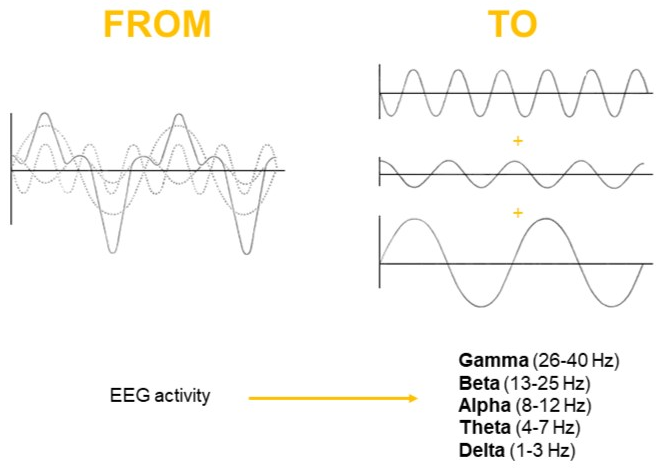
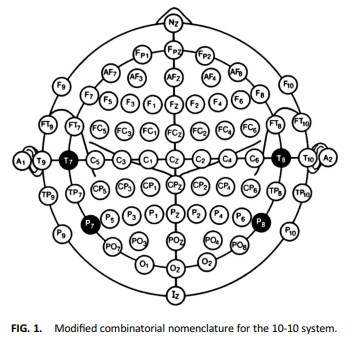
Neuroelectrics, "Enobio Unboxing" (YouTube)
Say what EEG and frontal alpha asymmetry measure and what they cannot, name the five frequency bands, explain why a rising FA score means relatively more left frontal activity, and list the equipment, software, and files this workshop uses.From idea to research question
A client rarely arrives with a research question, only a business question. Picture a brand team with a finished commercial built around one striking moment, the key scene, that asks (a teaching scenario modeled on the iMotions demo study, not a statement about any brand): "Does the key scene in our commercial make people want the brand more?" The sentence names a scene and a wish, but not who will watch, what "want" means, how it will be measured, or what difference would count. A research question names the problem the study will answer and signals the type of study needed; a hypothesis is a testable answer to it, written with the variables that will be measured. First, though, you need to know what a cap of electrodes can say about wanting.
Researchers who study the frontal cortex describe motivation as running from approach motivation, the urge to move toward something, to withdrawal motivation, the urge to move away. A long line of EEG research links relatively greater left frontal activity to approach and relatively greater right frontal activity to withdrawal (Davidson, 2004) (Harmon-Jones & Gable, 2018). Reviews treat frontal asymmetry both as a stable trait that differs between people and as a state that shifts with what a person faces (Coan & Allen, 2004) (Reznik & Allen, 2018). An advertising study asks about the state: did the balance move during this scene?
Approach is not the same as liking. Valence is whether a feeling is pleasant or unpleasant, and the two can part company: anger is unpleasant, yet it pulls a person toward its target, and it goes with relatively greater left frontal activity, like other approach states (Harmon-Jones & Gable, 2018). The iMotions notebook article agrees: "these motivational systems operate independently of valence." Some iMotions texts add the words liking and disliking in parentheses after approach and withdrawal; this workshop keeps the motivational words, and section 06 returns to an iMotions article that reads otherwise.
Did the key scene shift a viewer's frontal balance toward approach, compared with the same viewer at rest a minute earlier? Was the end of the commercial, where the brand appears, met with more approach after the version with the key scene than after the version without it? Which of two commercials shifted the balance more?
Did viewers like the scene or the brand? Which emotion did they feel: delight, curiosity, or irritation? Will they buy? Each needs another measure: a rating, facial expression analysis (Workshop 3), or a criterion such as choice or sales.
Reading a specific mental state, such as liking, straight off a brain signal is called reverse inference, and it holds only to the extent that the signal is specific to that state (Plassmann et al., 2015). FA is not specific to liking. Of the lab's measures it is the closest to the client's word "want," because wanting is a pull toward something, but a shift toward approach during a scene is not a purchase, and it is not even a response to the brand unless the brand is on screen.
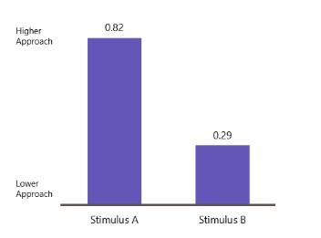
Why measure approach in advertising? The demo this workshop follows was inspired by a study that compared Sony Bravia commercials with frontal alpha asymmetry (Ohme, Reykowska, et al., 2010), and a companion article discussed the frog scene in one of them, Balls (Ohme, Matukin, & Szczurko, 2010). The same group had recorded EEG and skin conductance during two versions of a skin care advertisement (Ohme et al., 2009), and a review covers EEG and related tools in neuromarketing (Vecchiato et al., 2011). Prediction of the market is a separate question: brain responses to movie trailers predicted individual preferences and the films' population wide commercial success (Boksem & Smidts, 2015); how similarly viewers' brain activity unfolded over time predicted audience preferences (Dmochowski et al., 2014); and one study combined neurophysiological methods with market response modeling to ask which measures predict advertising success beyond traditional ones (Venkatraman et al., 2015). FA is evidence about motivation during a scene, not a forecast of sales.
Now the hypotheses, written before any data exist. The independent variables, what the researcher changes, are the period (a resting baseline, a neutral 60 s nature video just before each commercial, or a segment of the commercial), the version of Commercial 1 (Version A with the key scene, Version B with it cut), and the commercial (Commercial 1 or Commercial 2). The dependent variable is Mean Frontal Asymmetry Alpha, the notebook's mean FA over a stimulus or marked segment, taken as a change score: the segment minus the baseline just before its commercial. The end scene is the last 10 s of each commercial, where the brand appears, the window the demo study analyzed.
- H1. Among viewers of Version A, FA during the key scene is higher than FA during the baseline before the commercial.
- H2. The baseline corrected FA during the end scene of Commercial 1 is higher after Version A, with the key scene, than after Version B, without it.
- H3. The baseline corrected FA over the whole commercial differs between Commercial 2 and Commercial 1.
- Exploratory. How the FA change relates to a liking rating (1 to 7) after each commercial; recall of the key scene and the brand; and frontal midline theta, theta power at the midline frontal site Fz, which rose with task load in the workload study iMotions cites (M. E. Smith et al., 2001).
A two tailed test asks whether two means differ in either direction; a one tailed test looks only in the predicted direction and is blind to a difference the other way. All the tests here are two tailed, but a hypothesis may still state a direction if a reason is written down before the data, and then it counts as supported only when significant in that direction. H1 states one because the scene was made to draw viewers in, and the published Sony Bravia work singled out one scene, the frog, for analysis with EEG. H2 states one because approach raised by the key scene may carry into the end scene, where the brand appears; it can fail even when H1 holds. H3 states none: the commercials differ in everything at once, and nothing known beforehand says which should draw more approach. The demo's chart favored one commercial, but four respondents are an anecdote, and this plan's commercials are not the Sony ones.
Now the client's sentence can be rewritten. The lab asks every study to pass through one sentence with four slots: who, sees what, measured how, compared against what. Here: adult viewers (who) watch one version of Commercial 1, assigned at random, and Commercial 2, each after its own 60 s baseline, in a balanced order (sees what), while an Enobio 8 cap records EEG and a rating slide asks how much they liked each commercial (measured how), and each segment is compared with the same viewer's baseline, the versions with each other, and the commercials with each other (against what).
Weak questions fail in their own ways. "Does the key scene work?" asks for a judgment: work at what? "Do viewers love it?" asks about valence, "What do people feel?" asks which emotion, and "Will it sell?" asks about the market. The repair names an observable, a window, and a comparison: "Among viewers of the version with the key scene, does frontal alpha asymmetry during the scene rise above each viewer's own baseline, and is the end scene met with a larger shift toward approach after that version than after the version without the scene?" It claims a shift toward approach, not wanting the brand, and certainly not buying it.
The last step is to choose one primary measure for each hypothesis before the data exist and to label everything else exploratory. The notebooks report asymmetry in five bands and power at every channel and band, for every stimulus and segment; test them all and something will come out by chance. Here the primary measure is Mean Frontal Asymmetry Alpha as a change from the preceding baseline, in one window per hypothesis: the key scene, the end scene, the whole commercial. Filing that plan before collection is called preregistration; it lets a reader tell a prediction from a story told afterward, and section 08 holds you to it.
Help center articles for this section: Introduction to: EEG · R Notebook: EEG Frontal Asymmetry (FA) · Demo study: Sony Bravia (Testing of video-commercials) - 9.0
Turn a client's question about wanting a brand into a testable research question, separate approach motivation from liking and valence, say what frontal asymmetry can and cannot support, and write three hypotheses with one primary measure and window each, with no direction where none can be defended.Designing an EEG ad study
A frontal asymmetry study of a commercial is designed around two facts. A scene cannot be unseen. And people differ in resting asymmetry, a level each person carries into every task (Coan & Allen, 2004). The answer is a mixed design, which compares some conditions between people and others within the same people.
The version of Commercial 1 is between subjects: each respondent sees only one version, because a viewer who has seen Version A, with the key scene, would watch Version B knowing what was cut. Randomization, assignment by chance, decides who sees which, so that nothing about the people can line up systematically with the version. The simulated plan assigns 48 respondents in blocks of four to four groups of 12 (Version A or B, each with Commercial 1 or Commercial 2 first); every block holds one respondent of each group, so the groups stay balanced even if collection stops early. The demo study used the same logic on a small scale: two respondents saw Balls with the frog (Commercial 1A), two saw it without (Commercial 1B), and all four saw Paint (Commercial 2).
The commercials are within subjects: every respondent sees a version of Commercial 1 and also Commercial 2, and serves as his or her own control for H3. The first commercial can change how the second is received, through tiredness or knowing what the session holds, so counterbalancing shows each order to equal numbers of respondents within each version, and an effect of position falls equally on both commercials.
Each commercial also gets its own baseline, a neutral 60 s nature video just before it, and every score becomes a change score, the segment minus that baseline. There are three reasons. The iMotions notebook article says FA scores "should be interpreted relative to each other," and the fairest comparison is the same person a minute earlier. Subtracting each person's resting level removes the trait and leaves the state, the shift that goes with what is on screen. And a session drifts: the second commercial follows the first and a rating slide, so a fresh baseline limits the drift in its change score. In the simulated data the two baselines average -0.052 and -0.054, correlate at r = .82, and 67.8 percent of baseline values are negative (all simulated). Scores below zero are no problem, as in the demo chart, because only differences are interpreted.
The flow is therefore Baseline_1, the first commercial, a rating slide, Baseline_2, the second commercial, and a second rating slide. The rating slide collects liking, the valence check that frontal asymmetry cannot supply. The demo's baselines were "two 1-minute videos of fishes in a coral reef," and this plan copies their length; the lab manual describes longer eyes open and eyes closed rest periods for EEG (3 minutes of each in one place, 2.5 in another), so section 10 lists 60 s as a limitation.
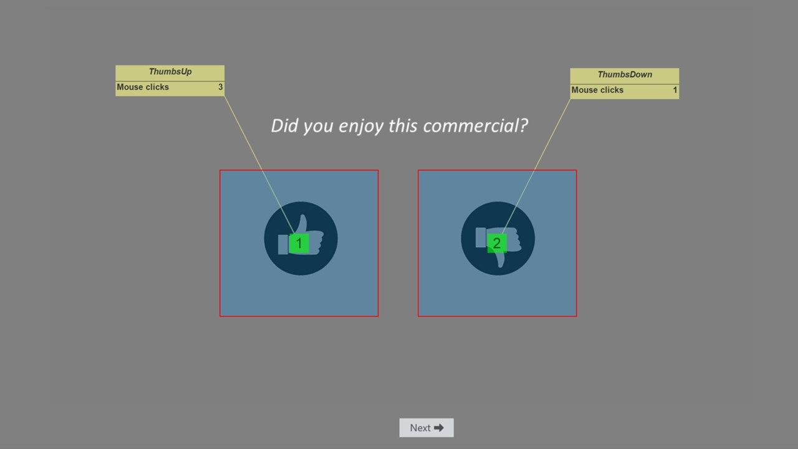
Length matters for asymmetry. By default the notebook cuts the EEG into windows 1 s long, a new one starting every 0.5 s (the Welch method, section 06), finds alpha power in each, and averages. A 60 s commercial holds 119 windows, the 10 s end scene 19, and a 6 s key scene only 11. An artifact, a voltage from a source other than the brain such as a blink or a clenched jaw, is often far larger than the brain signal, and a window with a sample above the artifact threshold is dropped, so short scenes give noisy averages. In the simulated data the key scene change varies more between people than the whole commercial change (standard deviation 0.142 against 0.098, simulated). A scene level hypothesis needs a scene long enough to hold several windows, respondents who blink normally and sit still, and more respondents than a whole commercial test.
Power analysis sets the sample before the data exist. Power is the probability of detecting an effect of a given size if it is real; the usual target is 80 percent. Within subjects the effect size is dz, the mean of the change scores divided by their standard deviation (Lakens, 2013). Between subjects it is d, the difference between group means divided by the pooled standard deviation, and the price rises sharply, because differences between people stay in the comparison.
Within subjects, at two tailed alpha .05 and 80 percent power, a large effect (dz = 0.8) needs 15 usable respondents, a medium one (0.5) 34, and a small one (0.3) 90. Between subjects, a large effect (d = 0.8) needs 26 per group and a medium one (0.5) 64 per group. In the simulated study the end scene effect between versions was d = 0.36, which needs 120 per version, while the key scene effect, dz = 0.68, needs only 19 (simulated).
G*Power is the program most researchers cite (Faul et al., 2007). The labels small, medium, and large were written for group differences (Cohen, 1992), a rough guide for dz.
Two consequences follow. A study of 48 must decide in advance which hypothesis it can test well: 24 per version is enough for H1 if the key scene effect is near dz = 0.7, and far too few for H2 unless the version effect is very large, so the plan says beforehand that a nonsignificant H2 will be inconclusive. And H1 uses only Version A, so its power depends on one group. The table counts usable respondents, and losses fall on everyone scheduled, so divide the usable number by (1 minus the expected loss) and round up. The simulated study lost 3 of 48 under its rule, about 6 percent, and would have lost 7, about 15 percent, under the stricter rule of its sensitivity analysis (simulated); a first study with a new protocol should plan for the higher figure. For H1 at dz = 0.68 with 15 percent losses, 19 / 0.85 = 22.4, so 23 per version.
Write the exclusion rule before anyone is recorded; a rule written after seeing the data is a rule chosen to get a result. NIC2 shows each electrode's contact as Red, Yellow, or Green, and each notebook report gives the Percentage of data filtered per channel, the share of samples removed at the artifact threshold (120 microvolts by default in the article text; the report screenshots name 100, so verify on the lab computer). The rule: exclude a respondent when more than 25 percent of the F3 or F4 samples are removed in any baseline or commercial, or when the session log records a Red status at F3 or F4 that could not be fixed before recording. Yellow is allowed, and every reason goes in the log.
One commercial pair is two stimuli, not a sample of commercials. A difference between the commercials belongs to everything that differs at once, and a key scene effect to this scene in this commercial. A claim about key scenes or commercials in general needs many of them analyzed as a sample, called stimulus sampling (Judd et al., 2012).
Last, preparation, consent, and comfort. Oil, dead skin, and sweat raise the impedance, the resistance between electrode and scalp that NIC2's colors summarize, so the lab manual asks respondents to wash their hair the night before with no conditioner or hair products, to avoid caffeine and heavy exercise for 2 hours before, and to sleep 7 hours or more, and it screens for gel allergies, seizure disorders, and photosensitivity. Informed consent is a documented explanation, given before participation, of the purpose, the right to stop at any time, how the data will be handled, and the risks; here it names EEG as the signal recorded and explains that a snug cap is fitted and gel applied at each electrode. Two articles set out the ethical questions: the neuroethics of neuromarketing (Murphy et al., 2008) and the ethical implications of its use and potential misuse (Stanton et al., 2017). The lab's own rules are simple: EEG files are personal data kept under respondent codes, and no result is ever described as reading a mind. At Jacksonville State a study that will be published or presented first goes to the Institutional Review Board (IRB), the committee that reviews research with human participants.
Help center articles for this section: Demo study: Sony Bravia (Testing of video-commercials) - 9.0 · R Notebook: EEG Power Spectral Density (PSD) · How to check EEG data quality · Introduction to: EEG
Defend a mixed design with the version between subjects and the commercials within subjects, explain why each commercial gets its own baseline and why short scenes give noisy scores, size the sample for the hypothesis that needs it with losses included, and fix the exclusion rule, preparation, screening, and consent in advance.The worked example in full
Everything in sections 01 and 02 fits on one page, the first deliverable of any study in this lab. Below is the frontal asymmetry test as a student study plan; read it as a template for your own.
- Question
- Among adult viewers, does the key scene in Commercial 1 shift FA toward approach relative to each viewer's resting level; is the end scene, where the brand appears, met with more approach after the version with the key scene than after the version without it; and do the two commercials differ in the shift they produce?
- Hypotheses
- H1: in Version A, FA during the key scene is higher than during the baseline before the commercial. H2: the baseline corrected end scene FA of Commercial 1 is higher in Version A than in Version B. H3: the baseline corrected whole commercial FA differs between Commercial_2 and Commercial 1. Exploratory: liking, recall, frontal midline theta. All tests two tailed at alpha .05; H1 and H2 are supported only when significant in the predicted direction.
- Design
- Mixed: version (A with the key scene, B without) between subjects; commercial within subjects, order counterbalanced within each version. 48 respondents (P01 to P48) assigned in blocks of four to four groups of 12: A_C1first, A_C2first, B_C1first, B_C2first.
- Stimuli and flow
- An instruction slide, Baseline_1 (60 s nature video), the first commercial, a rating slide, Baseline_2 (a second 60 s nature video), the second commercial, a rating slide. Commercial_1A: 60 s, key scene at 32.0 to 38.0 s. Commercial_1B: 54 s, the same commercial with those 6 s cut. Commercial_2: 60 s.
- Annotations
- Two stimulus annotations: KeyScene (32.0 to 38.0 s of Commercial_1A only) and EndScene (the last 10 s of each commercial).
- Device and recording
- One Neuroelectrics Enobio 8 at a sampling rate of 500 Hz, gel at every electrode, USB connection (iMotions recommends USB, the lab manual describes Wi-Fi: verify the lab's choice). NIC2 protocol loaded with LSL Server on; in iMotions, a Lab Streaming Layer device named "Enobio EEG" with the Enobio device profile selected before the first recording.
- Channel map
- Ch1 Fz, Ch2 Cz, Ch3 Pz, Ch4 Oz, Ch5 F3, Ch6 F4, Ch7 P3, Ch8 P4: ASSUMED from the lab manual's example montage. Read the real map from the NIC2 protocol on the lab computer and write it down before the first respondent.
- FA settings
- EEG Frontal Asymmetry R Notebook: Left frontal electrode set Ch5 (F3) and Right frontal electrode set Ch6 (F4), entered by hand, never the defaults Ch1 and Ch7 (if the LSL Left and LSL Right frontal electrode set fields apply to the Enobio instead, enter the same channels there; verify which). Alpha band (8 to 12 Hz); Welch PSD (50% overlap) with 1 s windows; band-pass filter 0.5 to 100 Hz; notch filter 60 Hz; artifact threshold 120 microvolts (the article's default; verify against the 100 named in the report screenshots).
- Measures
- Primary: Mean Frontal Asymmetry Alpha (EEG Frontal Asymmetry Metrics export) for each stimulus and annotation, as a change score from the baseline before the commercial. Data quality: the Percentage of data filtered at F3 and F4 in each notebook report, and the NIC2 status at F3 and F4 in the session log. Exploratory: liking (1 to 7), key scene recall, brand naming, and Mean PSD Ch1 Theta (dB), frontal midline theta at Ch1 (assumed Fz), from the EEG Power Spectral Density R Notebook.
- Exclusion rule
- Exclude a respondent when more than 25 percent of the F3 or F4 samples are removed in any baseline or commercial, or when the session log records a Red status at F3 or F4 that could not be fixed before recording; log the reason.
- Analysis plan
- H1: a paired t test of the key scene against its baseline, with dz and its 95 percent confidence interval and a Wilcoxon signed rank test as a check. H2: Welch's t test, Version A against B, with Hedges' g, a Mann Whitney test, and the sample a conclusive test would need. H3: a paired t test, plus a mixed model with commercial, version, their interaction, viewing position, and a random intercept per respondent, with the ICC. Sensitivity analyses: a 15 percent exclusion threshold and no baseline correction. Teaching contrast: H1 with the default channels.
- Deliverables
- A table of FA change by segment and version, four figures, a results section and a discussion in journal form, and a three sentence client summary that says "shifted toward approach," never "liked" or "will buy."
Several names return in section 08. An annotation marks a stretch of a timeline, and a stimulus annotation applies to everyone who saw that video. Welch's t test compares two groups without assuming equal spread; the Wilcoxon and Mann Whitney tests repeat the paired and two group tests on ranks; the mixed model is a regression that knows which rows come from the same respondent; and a sensitivity analysis repeats a test under another reasonable choice.
Each hypothesis has one window. H1 uses the KeyScene of Version A against the baseline before Commercial_1A. H2 uses the EndScene of Commercial 1: its 10 s are the same footage in both versions, so a difference there can only come from what came before. H3 uses whole commercials, which share no scene and give the steadiest scores. Liking is the valence check that FA cannot supply; theta is described, not tested.
The real material is the iMotions demo study "DEMO - SonyBravia" in the Library on the lab computer (Lab - Alien). Captures from October 10, 2026 show four respondents, R1 to R4; Baseline1 and Baseline2 (1 min each); Commercial1A_Balls (2 min 30 s, two respondents), Commercial1B_Balls (2 min 30 s), and Commercial2_Paint (1 min 11 s), each followed by a rating slide; welcome, instruction, loading, and thank you slides; and a scene, Commercial1A_Balls&Frog, that isolates the frog. The SENSORS tab lists Eye tracking (Aurora), Respondent Camera (AFFDEX unticked), and Lab Streaming Layer; the Study settings Description holds the two Ohme references; and the RECORDED DATA tab offers Exposure summaries (Calculate) and Affectiva (Post Process).
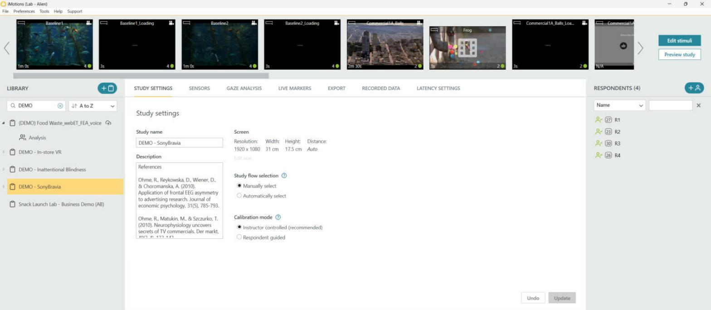
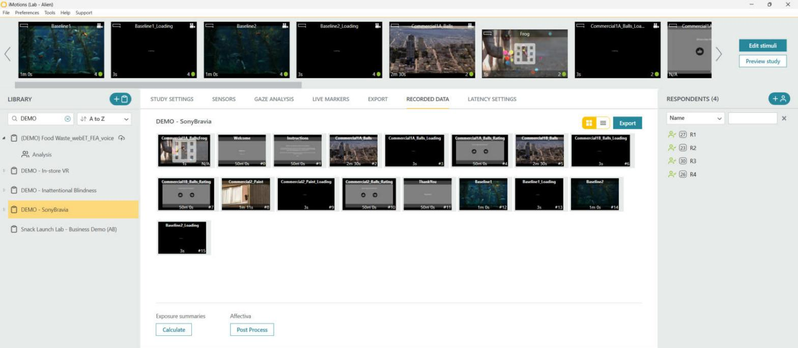
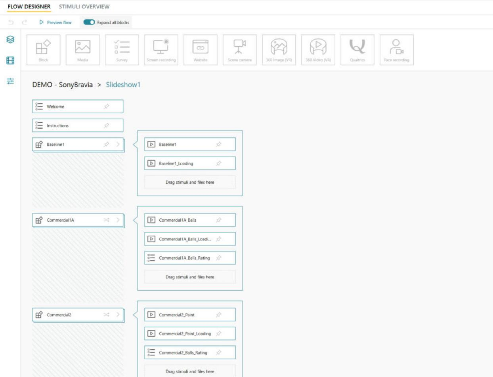
The demo article (version 9.0) adds the rest. Inspired by the two Ohme articles of 2010, the demo uses the Sony Bravia commercials Balls (2005) and Paint (2006): two respondents saw Balls with the frog scene (Commercial 1A), two saw it without (Commercial 1B), and all four saw Paint (Commercial 2), so 1A and 1B are compared between subjects and commercials 1 and 2 within subjects. Its EEG came from an Enobio 32, whose channel numbers do not match the lab's Enobio 8. Its example analysis compared "the last 10 seconds of the commercial," the end scene with the slogan "colours like no other," with the 1 minute baselines. All its FA bars were negative, and Paint showed "a relatively stronger approach motivation (i.e., less negative, hence more positive, frontal alpha asymmetry scores)" than Balls. The article then warns that "more than four respondents would be needed to draw statistically relevant conclusions; this analysis is merely an example." The article lists a Biopac unit for skin conductance that the lab copy's SENSORS tab does not show. The lab copy holds four saved analyses (Analysis, Analysis_With_FROG, Analysis_Without_FROG, and Baseline), and the first lists EEG Frontal Asymmetry flows, but when a new flow is started there the Devices list offers no EEG device and the R PROCESSING export tab lists no EEG export (October 10, 2026; Step 07 shows both screens). The lab copy therefore does not appear to hold EEG data the notebooks can process: use it to study the design, the stimuli, and the analysis setup, and use the simulated files for the numbers.
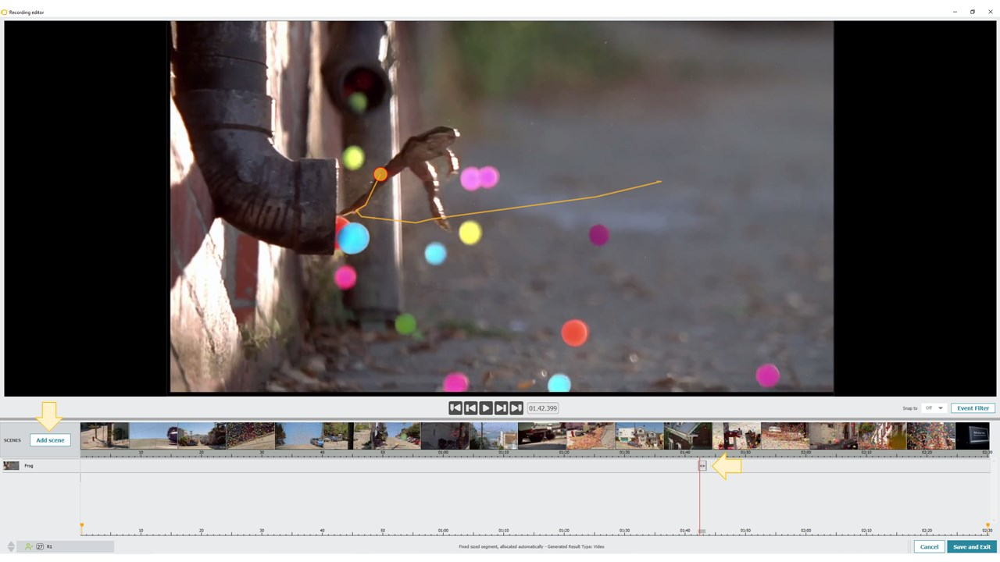
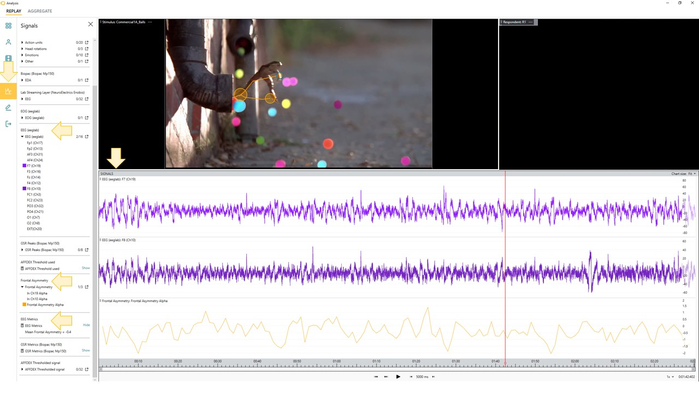
Every number about respondents in this workshop's analyses comes from a SIMULATED data set built in the style of the demo study, shortened and enlarged for teaching. No person was recorded, nothing about the Sony commercials went into it, and no number may be quoted as a finding. The only real counts of people are the demo's four respondents.
One script, make_simulated_data.py (seed 20267088), generated the six data files; each opens with lines that say SIMULATED, and all share Respondent Name (P01 to P48). SIMULATED_eeg_fa_metrics.csv is the file the tests use: one row per respondent and stimulus or annotation, 312 rows (seven per Version A respondent, six per Version B respondent, since only Commercial_1A has a KeyScene). Its columns copy the EEG Frontal Asymmetry Metrics export in the R Processed EEG Export Files article with only Alpha selected: Study Name, Respondent Name, Gender, Age, Group (version and order, such as A_C1first), Type, Label, Start (ms), Duration (ms), Parent Stimulus (which tells the three EndScene rows apart), Mean Frontal Asymmetry Alpha, and Algorithm Device Name. Modeled, so check them in a pilot export: the Type values, Parent Stimulus on stimulus rows, and Algorithm Device Name as one column.
SIMULATED_eeg_fa_metrics_default_channels.csv is the same export run with the Enobio defaults, Ch1 and Ch7 (Fz and P3 under the assumed map), a teaching contrast never to be analyzed as asymmetry. SIMULATED_eeg_psd_metrics.csv follows the EEG Power Spectral Density Metrics export with Theta and Alpha, from Mean PSD Ch1 Theta (dB) to the Electrode Cluster Average; its column order and decibel base are modeled.
Three files are lab designs with modeled layouts. SIMULATED_eeg_artifact_report.csv gives, per respondent, stimulus, and channel Ch5 (F3) or Ch6 (F4), the samples expected, recorded, and removed and the Percent removed (%), as copied from the report box Percentage of data filtered (nb of samples filtered / nb total of samples); verify whether that box gives values per stimulus. SIMULATED_eeg_session_log.csv is the operator's log: cap size, connection, NIC2 status at F3 and F4, gel, setup minutes, incidents, and a decision note. SIMULATED_eeg_survey.csv holds Liking_Commercial_1_1to7, Liking_Commercial_2_1to7, KeyScene_Recall (NA for Version B), and Brand_Named_Correctly.
Three log notes say EXCLUDE: P27 (Version A), whose F4 stayed Red after re-seating, gel twice, and a lead swap (41.78 percent of F4 removed in Commercial_1A); P41 (Version A), with an 8.6 s LSL stream gap in Commercial_2 and then drift (30.42 percent of F4 removed); and P45 (Version B), with heavy movement and blinking (30.64 percent of F3 removed in Commercial_1B). That leaves 45, 22 in Version A and 23 in Version B (all simulated). The folder also holds analysis.R with its output and results tables, the workbook SIMULATED_eeg_analysis.xlsx with its walkthrough, and results_text.md, the model paragraphs for sections 06, 09, and 10.
Help center articles for this section: Demo study: Sony Bravia (Testing of video-commercials) - 9.0 · R Notebook: EEG Frontal Asymmetry (FA) · R Processed EEG Export Files · Annotations · Scene Editor
Write the one page plan for a frontal asymmetry study, pair each hypothesis with its window and change score, say what is and is not known about DEMO - SonyBravia, name the simulated file that answers each question and the parts that are modeled or assumed, and explain why four respondents can test nothing.Connecting the Enobio and building the study
An EEG (electroencephalography) recording, the record of tiny voltage changes picked up by electrodes (small sensors that touch the scalp), reaches iMotions through three programs. The Enobio sends its signal to NIC2, the Neuroelectrics control program (the manuals also write NIC and NIC 2.0). NIC2 publishes it on Lab Streaming Layer (LSL), "a universal system for synchronizing streaming data for live analysis or recording" in the iMotions LSL article (Kothe et al., 2025). iMotions listens through a Lab Streaming Layer device in Global Settings, and a study records it only if its sensors include Lab Streaming Layer. Both lab license keys include the EEG and LSL modules. Every link must hold before the first respondent arrives.
| Link | Where it is set | What fails without it |
|---|---|---|
| 1. Headset to NIC2 | NIC2 device screen (4.1) | NIC2 shows no device |
| 2. Protocol loaded, LSL Server on | NIC2 Protocols page and Protocol Settings (4.2) | iMotions finds no LSL outlets |
| 3. LSL device with the Enobio device profile and the EEG inlet | iMotions Global Settings, Sensors tab (4.3) | No sensor widget, or recordings that no notebook can process |
| 4. Lab Streaming Layer in the study | Select sensors page and the study's SENSORS tab (4.5) | The study records no EEG |
4.1 Connect the headset to NIC2
Why. NIC2 is installed once, "only for initial setup" (Setting up NeuroElectrics Enobio), but it must run with the headset connected in every session, because NIC2, not iMotions, talks to the headset. The article recommends a USB cable through the Neuroelectrics adapter in "a USB 3.0 port", and the Timestamping article calls a wired link "the most reliable type of communication (without data loss)". The lab manual describes Wi-Fi; this workshop follows iMotions and uses USB, as the simulated session log does. Verify the lab's choice on the lab computer.
- Charge and plug in. Charge the headset (the lab manual asks for a battery above about 50 percent) and use the same USB 3.0 port every time, because the device's COM number "will change when different ports are used".
- Find the headset. Open NIC2, click 'SCAN FOR DEVICES', and choose the connection type (USB, Wi-Fi, or Bluetooth). You should see the headset under My devices with a name and COM number ('NE-Device (COM17)' in the manual); write it down. Common mistake. Looking for the headset in iMotions; iMotions never connects to it directly.
- Set the options. Click the device and switch on 'TCP Connection'. You may switch off "Line Noise Filter - Enable at recording", because "a line noise filter is applied by iMotions EEG Signal Processing": the 60 Hz notch filter of section 06, which removes one narrow band of frequencies. If the NIC2 filter stays on, it must read 60Hz, the frequency of line noise (the hum of the electrical network) in the United States; the manual's screenshot shows the European 50Hz. Common mistake. Assuming the settings persist; verify on the lab computer whether 'TCP Connection' stays on and which filter setting the lab uses.
- Use it. Click 'USE THIS DEVICE' (the head icon on the left).
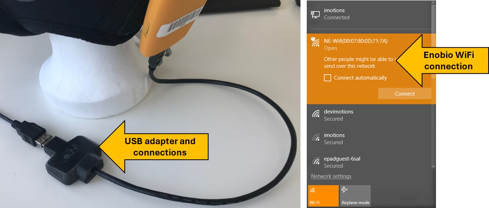
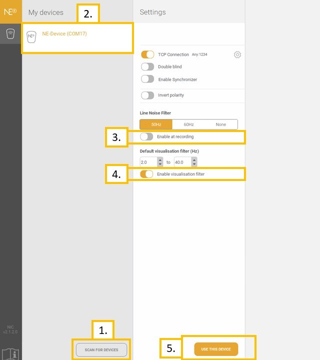
4.2 Build and load the NIC2 protocol
Why. The NIC2 protocol says which scalp site each of the eight channels records, and it must run before any data leave NIC2. iMotions receives numbers only: "For Enobio, channel names are reported as Ch1, Ch2, Ch3... You will have to find the original channel names in the Enobio software." The protocol is the only record of the montage, the set of scalp sites and the channel that records each. Sites follow the 10-10 system: a letter for the region (F for frontal), z for the midline, odd numbers on the left, even on the right (Oostenveld & Praamstra, 2001). F3 is left frontal and F4 its right partner, the pair this study compares.
- Open or create the protocol. Open the Protocols page (the head and electrode icon at the top left) and click "ADD NEW PROTOCOL", or select the lab's saved protocol. Under "Steps", name the step and give it a length, which the article calls "arbitrary" (its example: "8 channels", 20 seconds).
- Place the electrodes. Drag the eight sites from the montage to the right side. The article warns, "Make sure that the channels are placed in the correct sequence," and its screenshot shows a channel box (Ch 1, Ch 2, and so on) beside each chosen electrode; whether the drag order or that box sets the channel number is not stated, so verify on the lab computer. The LSL outlet "will always have the 8/20/32 channels no matter what you setup in NIC". You should see eight sites, each paired with one channel. Common mistake. Assuming the channel numbers follow the cap's printed labels or the notebook's defaults (4.6).
- Save, load, and stream. Click "FINISH and SAVE," then "LOAD PROTOCOL" ("NIC protocol must be loaded/running to send data to iMotions"), and confirm in the protocol's Settings that LSL Server is on; the manual's outlet name is "LSLOutletStreamName". You should see the Liveview page (the signal or wave icon) show data and a "Red/Yellow/Green status" for each electrode (section 05). Common mistake. Closing NIC2 after loading; the stream exists only while the protocol runs.
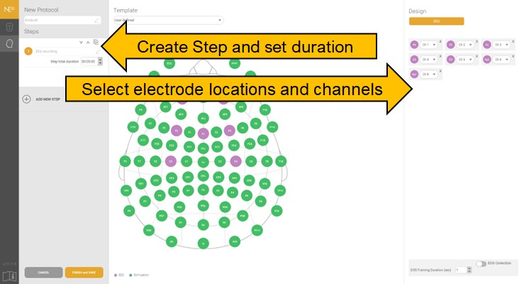
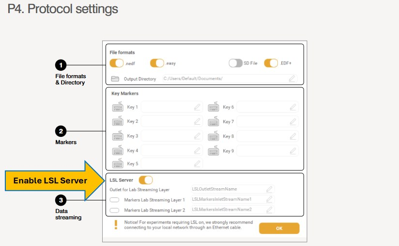
4.3 Add the Enobio to iMotions through LSL
Why. The Select sensors page on the lab computer lists Lab Streaming Layer but no tile named for the Enobio, so the headset reaches iMotions as an LSL device added once in Global Settings. Three choices there decide what can be done later: the device profile, "a text-based file (in JSON format)" that tells the notebooks the channel names and signal types; the LSL outlet, one of the named streams NIC2 publishes; and Enable data collection.
- Open Global Settings on the Sensors tab. On the lab computer Alt+S (Sensor Settings) does this (confirmed October 10, 2026); the tabs read Eye tracking, Calibration, Slide Show, Stimuli, Results, Audio & Video, Sensors, API, and Packages. The articles also give Preferences > Global Settings > Sensors.
- Find or add the device. On the lab computer a Lab Streaming Layer section named LSL already exists on the Sensors tab, with its Device profile box empty and the red prompt "Search for LSL outlets, and select one." (seen October 10, 2026). Use that section. Only if it is missing, click New Device under Tools (the label on the lab computer; one manual screenshot reads Add Device), set Device Type to "Lab Streaming Layer", type a Device Name such as "Enobio EEG", and click Save. You should see a Lab Streaming Layer section with Name, Device profile (with Edit, Refresh, and an information button), Outlets with Search, Active Inlets, Outlet Details, a Remove button, TCP Options, Enable data collection, and Forward samples. Common mistake. Adding a second LSL device when one already exists; the Sensors tab has a search box ("Search for device (Ctrl + F)") that helps you find it.
- Choose the profile first. In Device profile choose "Enobio (Enobio)". On the lab computer the list offers "EmotivEPOC+ (EmotivEPOC+)" and "Enobio (Enobio)" (October 10, 2026). You should see Enobio (Enobio) in the box. Common mistake. Editing the default profile, which calls Ch1 to Ch32 "EEG" (an Enobio 8 uses Ch1 to Ch8); custom profiles, saved as LSL_NoteBookMapping_<name>.json and loaded with Refresh, are for other headsets. The section on the lab computer also shows a box labeled "Use LSL timestamp in analysis and export", which the printed manuals do not describe; leave it as you find it and ask before changing it.
- Pick the EEG outlet. Click Search next to Outlets and select 'LSLOutletStreamName-EEG'; the outlets ending in -Accelerometer, -Markers, and -Quality do not carry the EEG. You should see the EEG outlet selected ("Found 4 outlets." in the manual).
- Enable and close. Tick EEG under Active Inlets, tick Enable data collection, which "creates a sensor widget", and click OK. You should see "a sensor widget appearing in the sensor panel and a green display showing the sampling rate". The sampling rate, samples recorded per second, should read 500 for the Enobio 8 (lab manual); the read-only Outlet Details list shows the EEG Sample Rate and Channel Count. Verify on the lab computer. Common mistake. Forgetting Enable data collection, so no widget appears and nothing is recorded.
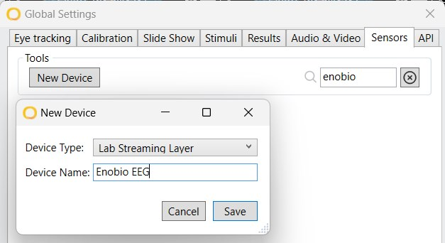
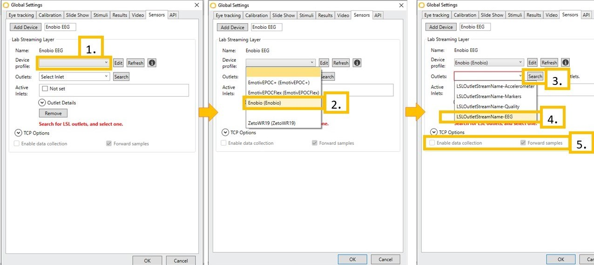
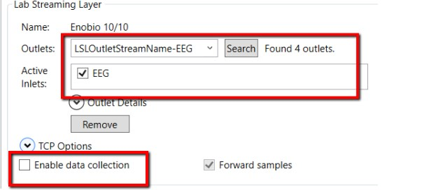
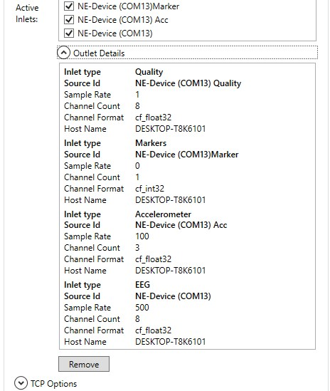
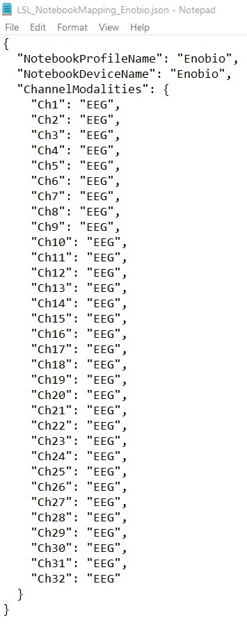
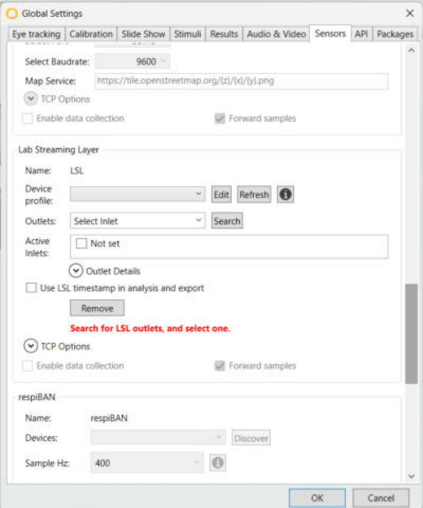
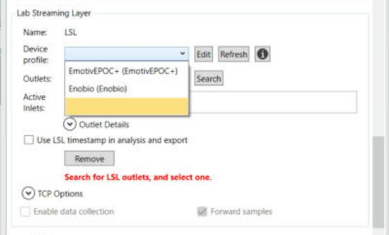
An empty outlet list means the fault is upstream of iMotions: "If the list of outlets comes up empty you need to revisit the 3rd party software" and make sure LSL is enabled (LSL article). In NIC2, check that the protocol is loaded and running and that LSL Server is on, then click Search again.
Why the profile comes first. The LSL article says "The device profile must be added before you start collecting data"; without one you can record, but "no signal processing tools can be added at a later stage." The frontal asymmetry (FA) and PSD notebook articles soften this: typed LSL channel names "will now work even if the user forgot to create a profile / created the wrong profile". A lost session cannot be repeated, so the lab follows the stricter rule and checks the box at the start of every session; the 10.0.1 release notes record a fix so that "Global Settings will again retain the selected LSL profile" (verify on the lab computer).
4.4 Latency and timing
Latency is the delay between an event and the arrival of its data in iMotions. The Latency settings article lists device corrections (Shimmer 28 ms, ABM B-Alert 40 ms, "Other" 0 ms) but not the Enobio, and unknown devices are "corrected by 0 milliseconds"; check the value on the study's LATENCY SETTINGS tab (click the study name, not an analysis). iMotions timing is "in the range of tens of milliseconds" (Timestamping article): enough for FA, which averages alpha power (brain activity at 8 to 12 Hz) over seconds, but not for event related potentials, responses time locked to an event within milliseconds, which need trigger hardware (section 06).
4.5 Build the Screen-based study
If you did Workshop 2 (eye tracking), this is the same Study Builder (its section 04 shows each screen), and Workshop 4 (skin conductance), section 04, shows blocks and duplicated flows. Every choice follows the plan in section 03.
- Create the study and select the sensor. Create a Screen-based study and, on the Select sensors page, select Lab Streaming Layer. The page warns, "You must also make sure each of the selected sensors is connected and configured in Global Settings." Select only what the design needs; the respondent camera is not part of it. You should see Lab Streaming Layer on the study's SENSORS tab, as on the lab's DEMO - SonyBravia study. Common mistake. Selecting the tile before the device of 4.3 exists.
- Add the stimuli. Each baseline, the neutral period a commercial is compared with, is its own stimulus: Baseline_1 and Baseline_2 (60 s nature videos; the demo used "two 1-minute videos of fishes in a coral reef"), Commercial_1A (60 s, with the key scene, the 6 s scene the client asked about) or Commercial_1B (54 s, without it), Commercial_2 (60 s), and a rating slide after each commercial. Use exactly these names: the export's Label column carries them, and the section 08 script looks for them. Common mistake. Leaving file names as stimulus names.
- Build four flows. Instructions, Baseline_1, the first commercial, a rating, Baseline_2, the second commercial, a rating, thank you. The version is between subjects (each person sees one version) and the commercial order is counterbalanced within each version, so the flows are Version A with Commercial_1A first or second, and Version B likewise. Counterbalancing, running each order equally often, keeps order effects off any one commercial. Each baseline stays directly before a commercial in every flow, so each commercial follows its own baseline. You should see four flows that differ only in version and order. Common mistake. A flow that shows both versions; the key scene cannot be unseen (section 02).
- Define live markers. A live marker is a time stamp the operator adds with a key during a recording. On the LIVE MARKERS tab add one each for movement or talking, cough or sneeze, noise in the room, and a lead problem (one article lists 'Name', key, 'Modifier', 'Color', then '+'; another says "Add Marker"; verify). The default key "F3" has nothing to do with the F3 electrode; pick keys no one will confuse. You should see the markers listed. Common mistake. Defining them after the first sessions.
- Plan the annotations. The key scene (32.0 to 38.0 s of Commercial_1A) and the end scene (the last 10 s of each commercial, where the brand appears) become annotations, marked stretches of the timeline, after recording (section 07). Write their times into the plan now.

4.6 Write the channel map down before the first respondent
The FA notebook's Enobio defaults are left "Ch1" and right "Ch7". Under the lab manual's example order (Fz, Cz, Pz, Oz, F3, F4, P3, P4), Ch1 is Fz, a midline site, and Ch7 is P3, a left parietal site, so the defaults would compare two sites that are not a frontal pair and still call the result frontal asymmetry; F3 and F4 would be Ch5 and Ch6. In the simulated data the defaults gave a baseline average of 0.681 instead of -0.053 and erased the key scene effect (change -0.011, t(21) = -0.40, p = .691; all simulated), with an export that looked normal.
| Channel | Site under the lab manual's example order (assumed) | Role in this study |
|---|---|---|
| Ch1 | Fz | Notebook default left (wrong for FA); frontal midline theta (exploratory) |
| Ch2 | Cz | Cap alignment (section 05) |
| Ch3 | Pz | |
| Ch4 | Oz | Eyes closed alpha check (section 05) |
| Ch5 | F3 | Left frontal electrode set |
| Ch6 | F4 | Right frontal electrode set |
| Ch7 | P3 | Notebook default right (wrong for FA) |
| Ch8 | P4 |
The lab rule: read the site of each of Ch1 to Ch8 from the lab's NIC2 protocol, copy it into the study plan and onto the first page of the session log, and enter the left and right electrode sets by hand in every FA flow (section 07). The lab manual labels the leads 1 to 8, so each lead must also sit at the site the protocol gives its channel; verify on the lab headset that lead and channel numbers match. Until then, every map in this workshop, the table included, is assumed.
Help center articles for this section: Setting up NeuroElectrics Enobio, Neuroelectrics Enobio: Lab streaming Layer, How to collect EEG data with an LSL device in iMotions, iMotions Global Settings, Latency settings, Timestamping and synchronization method, Using the iMotions Study Builder, Using Event Markers, and Creating Live Markers (During Data Collection). Manual PDFs on this site: Setting up NeuroElectrics Enobio, How to collect EEG data with an LSL device in iMotions, and Neuroelectrics Enobio: Lab streaming Layer (PDF). Neuroelectrics documents: NIC2 User Manual v2.1.0 and Enobio Instructions for Use v4.0.
Fitting the cap and running the session
The EEG signal is small: it "would typically fluctuate within a range of -100 to 100 microvolts around the mean" (FA and PSD articles). A blink, a clenched jaw, a turned head, the building's wiring, or a dried out electrode is larger. The frontal asymmetry (FA) score rests on alpha power (brain activity at 8 to 12 Hz) at just two electrodes, the sensors that touch the scalp at F3 and F4, so a poor contact at either changes the score directly. Quality is made at the head before recording; afterward the notebooks can only remove data (section 06).
5.1 Before the respondent arrives
- Send the preparation note. The lab manual asks respondents to wash their hair the night before without conditioner or hair products, avoid caffeine and heavy exercise for 2 hours before, and sleep 7 or more hours. Screening for gel allergies, seizure disorders, and photosensitivity happens at recruitment (section 02).
- Check the chain. Headset charged, NIC2 running the protocol with LSL Server on, and the iMotions widget showing the sampling rate (section 04). The condensed lab manual: "Always check device detection in software before placing sensors." The lab manual also suggests an impedance test (5.3) "on a dummy load or yourself".
- Lay out the supplies: the cap in three sizes, eight electrodes, conductive gel (the paste that carries the signal between scalp and electrode) with blunt syringes, the ear clip or reference leads, a tape measure, the consent form, the allocation list, and the session log, the operator's record of each session, with the channel map on its first page.
- Plan the time. With other sensors the lab order is "EEG cap first, then GSR electrodes, then eye-tracker calibration". The lab manual estimates about 10 minutes of EEG preparation, but simulated setups took M = 16.8 minutes (SD = 3.3, range 10 to 25; simulated), so use the manual's budget of 20 to 30 minutes for equipment.
5.2 Measure the head and fit the cap
Why. F3 and F4 must sit at the same places on every head. The placement article calls the 10-10 system "the academic standard for electrode placement"; it places sites by proportions of each head, not fixed centimeters. The lab caps are "usually marked with standard 10-20 locations" (lab manual); the eight example sites exist in both systems.
- Measure. Measure from the nasion, the dip at the top of the nose, to the inion, the bump at the back of the skull, and from ear to ear "from the preauricular point", just in front of each ear. Each distance divides into tenths; on a 35 cm nasion to inion distance, Fpz sits 3.5 cm, AFz 7 cm, and Fz 10.5 cm from the nasion.
- Choose the size by the circumference "just above the eyebrows and around the back": Small about 52 to 56 cm, Medium 56 to 58 cm, Large 58 to 62 cm; "Most adults will be medium" (lab manual). Log it.
- Fit and align. Insert the electrodes before fitting (lab manual). Slide the cap on while holding a midline frontal electrode at its tenth, then check that Cz sits at the vertex, the midpoint of the nasion to inion line and of the ear to ear line. Fasten the chin strap two fingers loose. You should see Cz centered and the cap symmetric over the ears. Common mistake. A cap pulled back or twisted, which moves F3 and F4 off their mirror positions, so the asymmetry partly measures the cap.
- Add gel. With the blunt syringe, part the hair and add "a small dollop per electrode" (lab manual). Common mistake. Too much gel; the lab manual warns not to "short two nearby electrodes with excessive gel (a little goes a long way)."
- Attach the reference. The reference electrode is the one every channel is measured against. Use the ear clip, or place the CMS and DRL leads, the Enobio's reference and ground leads, "as close together as possible without them touching" (Enobio article). The Introduction to EEG article notes that "the reference cannot be switched between left and right sides", so keep one placement for everyone and log it; EEG publication guidelines ask for the reference to be reported (Keil et al., 2014).
The lab manual describes "a set of dry electrodes (spring-loaded, 8 of them)" and gel "for optionally wetting electrodes to reduce impedance". Dry electrodes touch the scalp without gel (an early human test came from the ENOBIO electrode project; Ruffini et al., 2008), and with them, gel "is not applicable" (data quality article). This plan gels every electrode, as the condensed lab manual's steps do; verify which electrodes the lab owns.
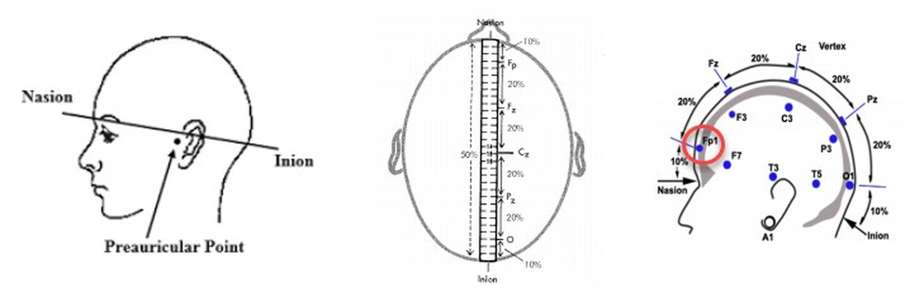
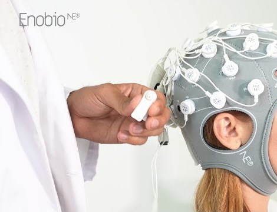
Neuroelectrics, "Enobio Setup" (YouTube)
5.3 Check the signal in NIC2
Why. Impedance is the resistance between scalp and electrode; the higher it is, the more noise enters, and dead skin cells, oily secretions, and sweat raise it (Introduction to EEG). How. The NIC2 Liveview shows a "Red/Yellow/Green status" per electrode, and the data quality article asks, "Are impedance values green?" The lab manual targets "below 10 kΩ, and ideally below 5 kΩ" (kilo ohms) with four bands (green under 5, yellow 5 to 10, orange 10 to 20, red over 20) where iMotions names three colors; verify what NIC2 shows, and log each channel's final status. Check the reference and ground first (lab manual), then fix in the article's order:
- A few channels red: press the electrode for about 10 seconds (lab manual), improve contact, set hair aside, add gel, replace the electrode; then "swap cables across two electrodes (one behaving well and one bad)" to see whether the fault follows the lead.
- All channels red: the reference, which every channel shares; the article says to "make sure the skin where the reference electrode will be placed is clean" and reseat the ear clip or the CMS and DRL leads.
- Still red, or a thick jagged band everywhere: "Are the PC and the monitor(s) connected to the wall grounded sockets through grounded plugs?" Line noise, the hum of the electrical network, is "50 Hz or 60 Hz depending on the country", 60 Hz here.
- One channel drifting: "a poor connection or a worn-out EEG lead/cable"; add gel, swap leads, replace the lead.
You should see Green, or at worst Yellow, at F3 and F4 before recording; the exclusion rule (section 02) excludes an unresolved Red there. In the simulated log, nine kept respondents had a Red fixed before recording, and 19 of 48 were recorded with a Yellow, which the rule allows (simulated). Common mistake. Recording with a Red at F3 or F4 to save time. The condensed lab manual says impedance can be checked "with NIC software and iMotions"; the iMotions manuals show it only in NIC2, so verify.
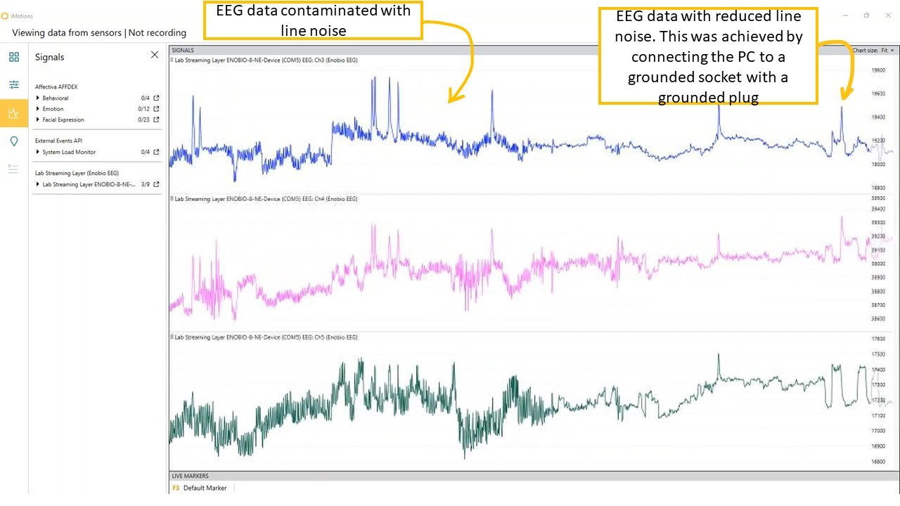
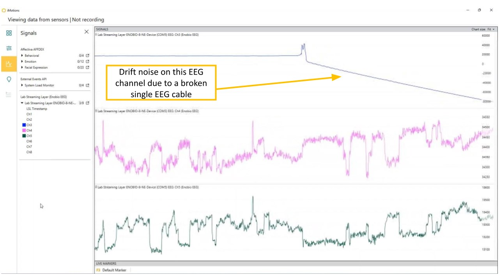
5.4 Make the artifacts on purpose
An artifact is a change in the signal caused by something other than the brain activity measured. The data quality article asks for a few blinks, pressed teeth, and furrowed brows before recording. Blinks should show "in frontal electrodes (for example F3, F4, F7 or F8)" and teeth pressing in "central electrodes like C3 and C4"; the assumed montage (the lab's set of sites) has only Cz as a central site, so note in the pilot where clenching shows. Seeing them "is a sign of having a good setup"; an F3 that shows no blink is not recording well. Then ask for about 10 seconds with the eyes closed (lab manual): alpha grows, expected at "O1/O2 or similar", so it should be clearest on the channel the protocol calls Oz (Ch4 assumed), a live test of the map. In the simulated baselines, the nature videos before each commercial, alpha was highest at the channels assumed to be Oz (12.63 dB) and Pz (11.77 dB) and lowest at the frontal ones (simulated).
Watch in the NIC2 Liveview or the iMotions Sensor Preview, the operator's live view of every signal, "only available when running the experiment on a dual-screen setup" and opened with F12 while recording. Its "Graph performance mode" "Low" and "Medium" downsample to 16 and 32 Hz, so only "High" (or the Liveview) can show 60 Hz noise. Then instruct the respondent: sit still, relax the jaw (the lab manual's fix for muscle artifacts), blink normally, and do not talk during the videos.
| What you see | Likely cause | What to do |
|---|---|---|
| A thick, jagged band that thins on a grounded socket | Line noise (60 Hz) | Grounded sockets and plugs for computer and monitors |
| One channel sliding steadily up or down | Drift: poor contact or a worn lead | Gel, swap leads, replace the lead |
| Tall, brief spikes on frontal channels at each blink | Blinks, welcome during the check | Nothing now; mark bursts during recording |
| A burst of fast, high amplitude activity | Chewing or jaw clenching | Ask the respondent to relax the jaw |
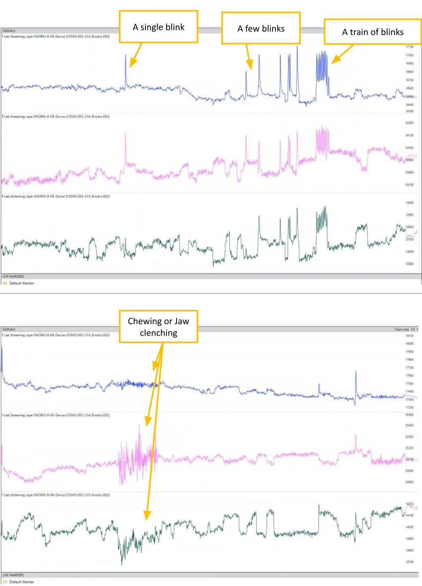
5.5 Run the session
- Consent first. Informed consent, the respondent's signed agreement after hearing what will happen, comes before the tape measure, on the form approved by the JSU IRB (Institutional Review Board) that names the cap, the gel, and the signals recorded.
- Fit, check, and test as in 5.2 to 5.4; log the cap size, the final F3 and F4 status, the gel, and the setup minutes.
- Add the respondent with an anonymous ID (P01) and the version and order from the allocation list, and choose the matching flow (verify how 11.1 offers it). Common mistake. A real name instead of an ID.
- Record. Start the recording and sit out of view. Press a live marker key for each incident; the data quality article suggests marking moments "when a respondent sneezes or coughs". If a lead fails during a video, press the lead problem key, let the stimulus finish, and fix it during the next rating slide (a rule of this study plan). Re-check impedance every 30 minutes in long sessions (lab manual). Common mistake. Stopping at the first problem; the rule written in advance decides later whether the data are used.
- End and log. After the thank you slide, end the recording (Shift-F1 in the Collecting Data article), remove the cap, debrief, and write the log row before the next respondent.
The simulated log (a modeled layout, not an iMotions export) records Respondent Name, Session Date, Operator, Version, Order, Cap size, Connection, NIC2 quality F3 before recording, NIC2 quality F4 before recording, Gel used, Setup minutes, Incidents, Data complete, and Decision note. Three rows, all simulated: P01's F4 was Red at the first check, then "hair parted, gel added, electrode pressed for 10 s; F4 Green before recording", and P01 was kept. P27's F4 stayed Red through re-seating, gel added twice, and a lead swap ("the fault stayed at the F4 site"); P27 was later excluded, with 41.78 percent of F4 samples removed in Commercial_1A. P41 had an "LSL stream gap of about 8.6 s during Commercial_2 (no samples in the iMotions sensor widget)" and drift after it (Data complete = No) and was later excluded with 30.42 percent of F4 removed. Incidents are written when they happen; the Keep or EXCLUDE decision comes later, from the report percentages of section 07, by the rule.
5.6 After the session: check and clean
Check. On the study's RECORDED DATA tab a red outline marks a recording below the quality iMotions expects (Collecting Data article); note it in the log. The notebook report check (section 07) should be done "every time you collect data on each respondent" (data quality article). Clean the same day (lab manual): rinse gelled electrodes "immediately" in distilled water with the connectors kept dry, wipe them with 70 percent isopropyl alcohol and let them dry, hand wash the cap in mild soapy lukewarm water without wringing it hard, air dry it overnight, and keep gel out of the transmitter's ports. The lab manual mixes rinsing, wiping, and soaking, and the Neuroelectrics cleaning article was not read for this workshop, so read it and the Enobio Instructions for Use before the first real session. Common mistake. Letting gel dry on the electrodes or water reach the connectors.
Help center articles for this section: How to place the EEG-system correctly on the head, How to check EEG data quality, General EEG protocol for good quality raw EEG data, How to clean Neuroelectrics Enobio electrodes and caps/headbands, Introduction to: EEG, Sensor Preview Window, Collecting Data, and Creating Live Markers (During Data Collection). Manual PDFs on this site: How to place the EEG-system correctly on the head and How to check EEG data quality (PDF). Neuroelectrics document: Enobio Instructions for Use v4.0.
From brain waves to asymmetry: filters, power, the FA formula, and what to report
Every frontal asymmetry result ends a chain. The electrodes of the Enobio 8 record scalp voltage 500 times per second, an R Notebook (a script that runs inside iMotions) cleans the signal and measures alpha power at a left and a right frontal electrode, and a formula turns the two powers into one score. A methods section describes every link, following the publication guidelines for EEG studies (Keil et al., 2014) and two primers on the road from raw signals to asymmetry scores (Allen et al., 2004) (E. E. Smith et al., 2017).
Step 1: cleaning the voltage
EEG normally stays within about -100 to 100 microvolts around its mean (FA and PSD articles). Artifacts, voltage from blinks, jaw muscles, movement, a lost contact, or the 60 Hz line noise of the building's power, can be far larger. Both EEG notebooks clean the signal in the same order (PSD article):
- a "zero phase-lag" band-pass filter, which keeps the frequencies inside a range, 0.5 to 100 Hz by default, without shifting the signal in time;
- a zero phase-lag notch filter, which removes one narrow frequency: 60 Hz in the United States (the default), 50 Hz in Europe;
- re-referencing, "for BrainProducts EEG only," so not for the Enobio;
- an artifact threshold, 120 microvolts by default, "rejecting data-points whose absolute values exceed a preset voltage threshold."
The threshold catches large artifacts only; smaller blinks and muscle activity pass through. The report screenshots name 100 microvolts instead of 120, so record the value in the panel and verify it on the lab machine.
Step 2: from voltage to power
A short stretch of EEG mixes waves of different speeds. The fast Fourier transform (FFT) splits the stretch into the amount of each frequency, the way a prism splits light into colors. The result is a power spectral density (PSD), how much power the signal carries at each frequency. A frequency band is a named range of frequencies, and alpha power is the average PSD inside the alpha band, 8 to 12 Hz.
The default Welch method (Welch, 1967), the "standard method in the scientific literature," cuts the signal into 1 s Hamming windows that overlap by 50 percent, giving one spectrum every 0.5 s, and drops any window that touches the threshold. The legacy method, inspired by the ABM algorithm, averages three 1 s windows inside each 2 s window. The Welch window can be 0.5, 1, or 2 s: "Only change this parameter if you know what you are doing."
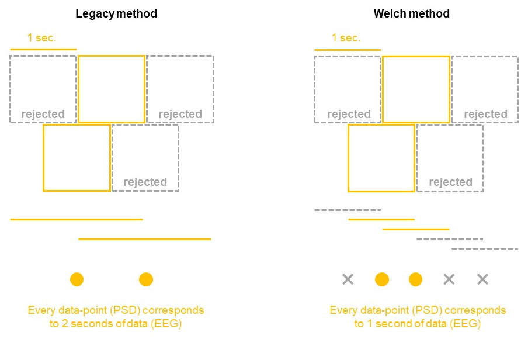
Band power is then shown in decibels (dB), a logarithmic unit, and averaging "across electrodes, time and participants is performed before applying any logarithmic transform" (PSD article). The order matters, because the log of an average is not the average of the logs: averaging exported dB values yourself will not reproduce the notebook's aggregate (this workshop's inference). Whether the FA notebook averages window FA values or window powers is not stated; verify on the lab machine.
Step 3: from two powers to one asymmetry score
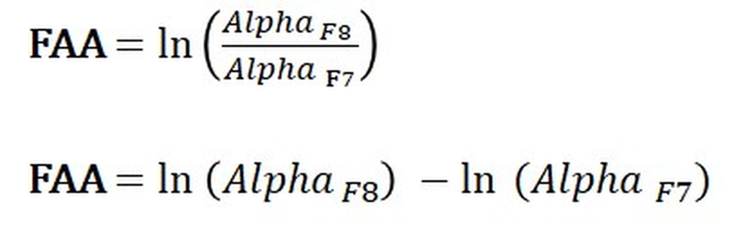
In words, the notebook subtracts "the natural logarithm transformed alpha power in the left hemisphere from the natural logarithm transformed alpha power in the right hemisphere." The natural logarithm (ln) turns a ratio into a difference, ln(right / left) = ln(right) - ln(left), and it is zero when the two powers are equal. The result is frontal alpha asymmetry (FA; the article also writes FAA), computed in every window and exported as a mean per stimulus and per annotation.
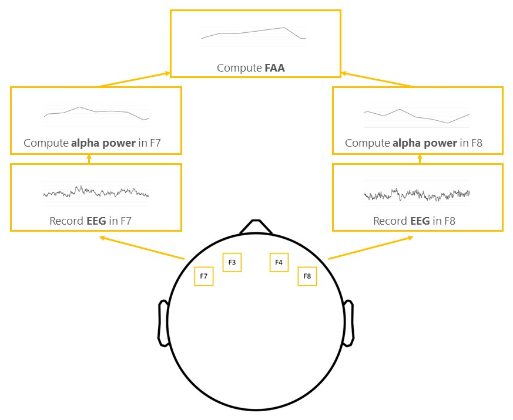
The sign rule
"Alpha power is inversely related to the level of brain activity," the FA article says: less alpha on one side means more activity there. So when right alpha is stronger than left alpha, the left side is relatively more active and FA is positive. A positive or rising FA means relatively more left frontal activity, read as approach motivation, the urge to move toward something; a negative or falling FA means relatively more right frontal activity, read as withdrawal motivation, the urge to move away.
The construct is approach and withdrawal motivation (Harmon-Jones & Gable, 2018); for frontal asymmetry and emotion see the reviews by Coan and Allen (2004), Davidson (2004), and Reznik and Allen (2018).
Relative, not absolute
"The frontal asymmetry scores should be interpreted relative to each other," the FA article says. A single score has no zero point that means neutral, because each person carries a stable asymmetry of their own: in the simulated baselines 61 of 90 values (67.8 percent) were negative, and every FAA bar in the Sony demo chart is negative (section 09). Only differences carry meaning: a commercial against the baseline before it, one version against another.
The Introduction to: EEG article says "larger left-frontal band power may indicate positive emotions such as joy," and its circumplex figure says "EEG data represent a measure of valence." Read literally, both run against the FA notebook: under its formula, larger left alpha power means less left activity, a lower score, toward withdrawal; and the FA article says approach can be triggered by anger and that "these motivational systems operate independently of valence" (valence: whether a feeling is pleasant or unpleasant), even though it puts "liking" in parentheses after approach. This lab uses the notebook definition, because the notebook computes the number and the literature frames frontal asymmetry as approach and withdrawal motivation (Harmon-Jones & Gable, 2018): FA is relative approach versus withdrawal motivation, not valence, and not liking.
Which electrodes, and which bands
"Often electrode locations F7 and F8 are used," the FA article says, or F3 and F4, or an average of both pairs. The lab uses F3 and F4 from the lab manual montage (the list of scalp sites the electrodes occupy). The notebook's Enobio defaults, left Ch1 and right Ch7, would be Fz and P3 under the lab manual order (Fz, Cz, Pz, Oz, F3, F4, P3, P4), so the lab enters Ch5 and Ch6 by hand from the NIC2 channel map written down before the first respondent (sections 04 and 07); the map is assumed until verified on the lab computer. Band ranges differ between manuals, so report the ones you used:
| Band | Introduction to: EEG | Notebook defaults (FA and PSD) | Other values in the manuals |
|---|---|---|---|
| Delta | 1 to 4 Hz | 1 to 3 Hz | |
| Theta | 4 to 8 Hz | 4 to 7 Hz | 4 to 8 Hz for workload (PSD article); 5 to 7 Hz (text) and 6 to 7 Hz (figure) in the workload article, after M. E. Smith et al. (2001) |
| Alpha | 8 to 12 Hz | 8 to 12 Hz | |
| Beta | 13 to 25 Hz | 13 to 25 Hz | |
| Gamma | above 25 Hz | 26 to 40 Hz |
Short windows are noisy, and baselines differ by person
Each 1 s window gives a noisy FA value, and a segment mean averages the windows that survived the threshold: a 6 s scene holds about 11 one second Welch windows, a 60 s commercial 119, so the simulated key scene change had an SD of 0.142 against 0.098 for the whole commercial. On estimating the reliability of asymmetry scores, see Towers and Allen (2009). Because every person also has a stable asymmetry of their own, the study analyzes a change score: the FA of a segment minus the FA of the baseline recorded just before its commercial. Subtracting each person's own baseline removes the stable part (a respondent's two simulated baselines correlated r = .82) and leaves what the commercial changed.
Timing: why this lab does not measure ERPs
An event related potential (ERP) is a small voltage change locked to the exact moment a stimulus appears, measured within a fraction of a second; for an introduction see Luck (2014). ERPs need near millisecond timing, but "the precision of the iMotions software is in the range of tens of milliseconds," and ERP work needs photodiodes, "trigger-boxes (TTL)," or sync units (Timestamping and synchronization method). The lab relies on software synchronization (lab manual), so ERPs are out of scope until it has trigger hardware. FA is averaged over seconds, and an alpha increase "may take between a few hundred milliseconds, and up to a few seconds," so FA is far less sensitive. Device latency, the delay a device adds, is not listed for the Enobio, so it presumably counts as "Other," 0 ms; check the study's latency settings tab.
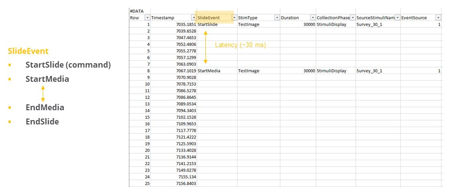
Two other EEG metrics
Intersubject correlation. The intersubject correlation (ISC) notebook asks whether different viewers' EEG rises and falls together, "also known as neural synchrony." It builds on work on intersubject synchronization of cortical activity during natural vision (Hasson et al., 2004), which the ISC article cites, and EEG studies have proposed correlated components as a possible marker of engagement (Dmochowski et al., 2012) and as a predictor of audience preferences (Dmochowski et al., 2014). In iMotions it is "a correlation computation on PSD metrics" that runs after one PSD flow, drops respondents with more than 75 percent missing PSD, needs "at least two valid respondents' data," and describes a group, not a person.
Frontal midline theta. The iMotions workload article builds on M. E. Smith et al. (2001), a study of monitoring task loading with EEG in which, the article reports, 5 to 7 Hz power at the midline frontal site rose under high load, and on Gevins and Smith (2003); a review relates alpha and theta oscillations to cognitive and memory performance (Klimesch, 1999). There is no separate workload notebook: frontal midline theta is the PSD notebook's theta power at Fz, band and window set by hand. It reflects task load, not motivation, and here it is exploratory.
Writing the methods paragraph
A reader must be able to repeat every choice: the device, connection, and sampling rate; the channel map and how it was verified; the reference and ground; the quality check; the notebook and every parameter as set; the annotation windows; the baseline correction; and the exclusion rule with each exclusion and its reason.
The model condenses section (a) of results_text.md; brackets mark what the lab fills in from the lab computer.
Forty-eight respondents were randomly assigned to Version A of Commercial 1 (Commercial_1A, 60 s, with a 6 s key scene at 32 to 38 s) or Version B (Commercial_1B, 54 s, the key scene cut) and to one of two viewing orders; all also saw Commercial_2 (60 s), each commercial after its own 60 s nature video baseline. EEG was recorded with a Neuroelectrics Enobio 8 at 500 Hz (USB, conductive gel), streamed from NIC2 to iMotions Lab 11.1 through Lab Streaming Layer with the Enobio device profile. [Reference and ground; final impedance per channel; how the channel map was verified.] The EEG Frontal Asymmetry R Notebook used Ch5 (assumed F3) as the left and Ch6 (assumed F4) as the right frontal electrode set, the Alpha band (8 to 12 Hz), Welch spectra in 1 s windows with 50 percent overlap, a 0.5 to 100 Hz band-pass filter, a 60 Hz notch filter, and an artifact threshold of 120 microvolts; FA = ln(alpha power at F4) - ln(alpha power at F3), so a higher FA indicates relatively greater left frontal activity, interpreted as approach motivation. Mean FA was exported for each stimulus and for two stimulus annotations, KeyScene (32 to 38 s of Commercial_1A) and EndScene (the last 10 s of each commercial), and corrected by subtracting the FA of the baseline that preceded the commercial. A rule fixed before collection excluded respondents with more than 25 percent of F3 or F4 samples removed in any baseline or commercial, or an unfixed Red NIC2 status at F3 or F4 (P27, P41, P45; n = 45). All numbers are simulated for teaching.
Writing "FA was computed with the default settings" (the Enobio defaults, Ch1 and Ch7, may not be frontal sites at all) or "a positive FA shows that viewers liked the commercial."
Help center articles for this section: Introduction to: EEG, R Notebook: EEG Frontal Asymmetry (FA), R Notebook: EEG Power Spectral Density (PSD), Timestamping and synchronization method, Latency settings, R Notebook: EEG Intersubject Correlation (ISC), and How to calculate mental workload metrics using EEG R Notebook.
Notebooks and exports: from recordings to Mean Frontal Asymmetry Alpha
Section 06 explained what the EEG R Notebooks, iMotions processing scripts written in R, compute; this section runs them and writes the files section 08 analyzes. Practice on your own pilot (exercise 5) and leave DEMO - SonyBravia unchanged. The channel map of section 04 decides the electrode settings, and the exclusion rule of section 02 is applied from the numbers produced here, before anyone looks at the frontal asymmetry (FA) results. Release 11.1.13 fixed notebook processing of Lab Streaming Layer data ("resolved an issue with LSL-based notebook processing"); both lab computers were scheduled for it on October 7, 2026, so confirm the installed release before processing.
7.1 Create the analysis
Why. An analysis is a named selection of respondents and stimuli on which notebooks run and from which exports, files for other software, are made; the recordings stay untouched. How. Right-click the study in the Library and choose Add Analysis, or hover over the study and click the Add Analysis button that appears (Analysis Overview article; Workshop 2, section 07, shows the screens); its tabs on the lab computer are SEGMENTATION SETTINGS, SEGMENTATION CRITERIA, SIGNAL PROCESSING, and SELECT STIMULI. Include every respondent: the rule needs the percentages of data removed, which exist only after the notebook runs, so it is applied afterward in the script (section 08). Notebooks can be added during creation "or later, by returning to the signal processing page within an existing analysis" (FA article). You should see the SIGNAL PROCESSING tab with "Active flows:" and its minus and plus buttons. Common mistake. Dropping odd looking respondents before any rule is applied.
7.2 Add the EEG Frontal Asymmetry flow
Each notebook is an active flow, one notebook run on one device under a name you choose. Since release 11.0.0 notebooks appear only "for the corresponding sensors and recorded data", so a missing EEG Frontal Asymmetry means the analysis holds no EEG from that device.
- Add the flow and choose the device. Click the plus button next to Active flows and, under Devices, choose the lab's Lab Streaming Layer device (the ISC article's screenshot names one "Lab Streaming Layer Enobio EEG"). The FA article's screenshot was captured with an ABM B-Alert EEG, so ignore its device name.
- Choose the notebook and name the flow. Under Algorithm (the article text says 'Algorithms') choose EEG Frontal Asymmetry, and type a Flow name that says what it does, such as FA_F3F4_alpha; repeated flows with the same name are "not executed".
- Record the parameters. Keep the defaults section 06 explains and copy them into the plan (table below). The PSD computation method is the Welch method, averaging the spectra of short overlapping windows (Welch, 1967). The band-pass filter keeps 0.5 to 100 Hz, the notch filter removes 60 Hz line noise, the artifact threshold drops samples at or above 120 microvolts, and with Powerbands options set to Alpha the flow computes alpha (8 to 12 Hz) only.
- Set the electrodes by hand. In Left frontal electrode set untick the default Ch1 and tick the channel the verified protocol gives F3 (Ch5 assumed); in Right frontal electrode set untick Ch7 and tick the F4 channel (Ch6 assumed). The sets are check box lists with "Select all | Select none". The LSL Left and LSL Right frontal electrode set (comma-separated) fields, "Only applicable to LSL devices", take typed names such as Ch5, are "Case-insensitive", and are blank by default. On the lab computer, the EEG Frontal Asymmetry flow saved in the DEMO - SonyBravia Analysis shows the Left and Right frontal electrode sets as check box lists of numbered channels (Ch1, Ch2, and so on) with "Select all | Select none", and the other parameters sit in collapsible groups named Preprocessing, PSD computation, and Powerbands (October 10, 2026). Whether a new flow for the lab's LSL device also shows the typed LSL fields is not yet confirmed: verify with the first pilot, and never leave the defaults. (The article describes the LSL Right set as "located on the left hemisphere", a copying error.) You should see one channel in each set, never the same one.
- Save and continue. 'Save as default' keeps the settings for later flows; 'Factory defaults' (the screenshot and the lab computer read Factory default) restores Ch1 and Ch7. Save once the map is verified, still read the sets in every new flow, and click Next. Common mistake. Leaving Ch1 and Ch7, Fz and P3 under the assumed map.
| Parameter (label as printed) | Manual default | This study |
|---|---|---|
| PSD computation method | "Welch PSD (50% overlap)" | Default |
| Window length for Welch PSD [in second] | 1 | Default ("Only change this parameter if you know what you are doing.") |
| Band-pass filter frequencies [in Hz] | 0.5 - 100 | Default |
| Notch filter frequency | 60 Hz ("In the US: 60 Hz") | 60 Hz |
| Artefact threshold [in µV] | 120 | 120 (check the report, 7.5) |
| Powerbands options; Alpha band frequencies [in Hz] | Alpha for FA; 8 - 12 | Default |
| Left / Right frontal electrode set | "Ch1 for Enobio" / "Ch7 for Enobio" | F3 / F4 channels from the verified map (Ch5 / Ch6 assumed) |
iMotions does not know which site an Enobio channel holds, so a Ch1 and Ch7 flow runs, reports, and exports like any other. In the simulated data it gave a baseline average of 0.681 instead of -0.053 and erased the key scene effect (t(21) = -0.40, p = .691; simulated). Check every flow against the written channel map.
![Analysis setup on the SIGNAL PROCESSING tab with five numbered yellow boxes: the SIGNAL PROCESSING tab, Devices set to B-Alert EEG, Algorithm set to EEG Frontal Asymmetry, the parameter list with PSD computation method Welch PSD (50% overlap) selected, Window length for Welch PSD [in second] 1 selected, and Left frontal electrode set with F3 ticked among F3, F7, and Fp1, and the Next button; Save as default and Factory default buttons sit under Parameters, and the Active flows list shows EEG Frontal Asymmetry](../assets/ws5/figures/fa_add_flow_parameters.png)
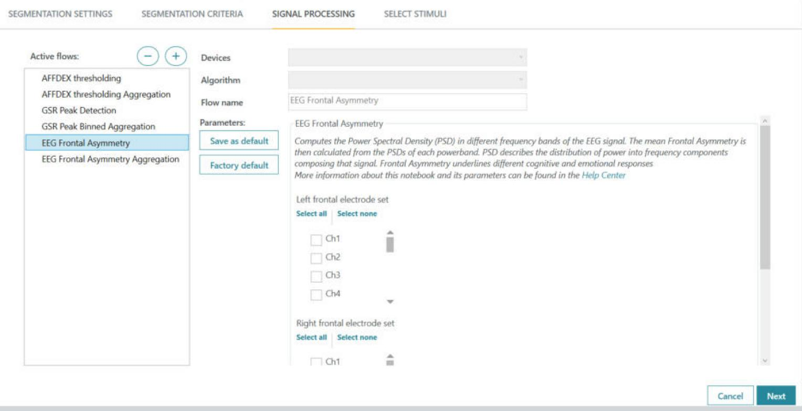
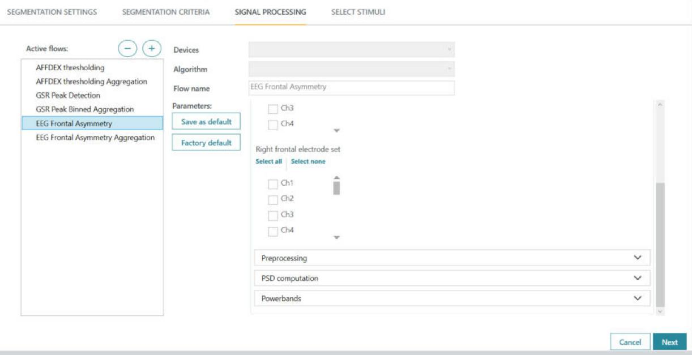
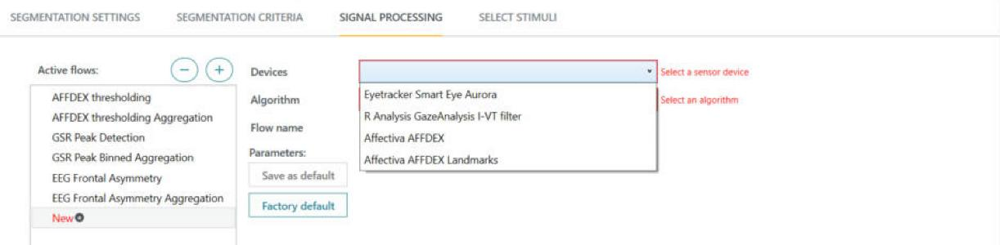
7.3 The other EEG flows, and the stimuli
- EEG Power Spectral Density, for the exploratory measures. Power spectral density is the signal's power at each frequency, averaged within each band and converted to decibels (dB), a logarithmic unit. Add one flow with the FA flow's filters and threshold and Powerbands options set to Theta and Alpha. It gives frontal midline theta, theta power (4 to 7 Hz by default) at the midline frontal site (Ch1 assumed), and alpha averaged over all channels, the "Electrode cluster for average PSD" default. "Please always add only one EEG Power Spectral Density R Notebook though" (ISC article).
- Aggregation, for a group picture. 'EEG Frontal Asymmetry Aggregation R Notebook' averages FA across respondents for the Aggregate Replay; "you have to run EEG Frontal Asymmetry R Notebook on an individual level first." The tests in section 08 use each respondent's own numbers.
- Intersubject correlation, for awareness only. Intersubject correlation (ISC) measures how similarly respondents' EEG moves over time (section 06); it needs the PSD flow and "at least two valid respondents' data", and no hypothesis here uses it.
- Select the stimuli. On SELECT STIMULI tick the two baselines and the three commercials, and wait until processing has finished before opening a replay.
7.4 Annotations: the key scene and the end scene
Why. The FA notebook reports "The mean FA for per stimulus, scene and annotation placed in the analysis" (sic), so in the exports annotations "serve as 'measurement windows'". An annotation marks a stretch of the timeline; a stimulus annotation applies to every respondent who saw the stimulus, which suits commercials because videos "play at the same speed for every respondent", while a respondent annotation marks one person.
- Open the annotations. Open the replay of Commercial_1A in the analysis and open the Annotations menu (the manual's screenshot shows Add annotation there). Nothing here needs the respondent camera pane; close it if a study shows one.
- Mark the key scene. Add a Stimulus annotation named KeyScene, set 'Step' to 'Frame' so the cursor moves one video frame at a time, and mark 32.0 to 38.0 s. You should see a 6 s KeyScene bar under the timeline. Common mistake. A respondent annotation, drawn once per respondent and a little different each time.
- Mark the end scenes. Add EndScene, the end scene, on each commercial for its last 10 s: 50.0 to 60.0 s of Commercial_1A and Commercial_2, 44.0 to 54.0 s of Commercial_1B. The demo study likewise analyzed "the last 10 seconds of the commercial".
- Check that the numbers include them. The manuals do not say whether a flow that already ran picks up an annotation added or moved later. After exporting (7.6), check that every KeyScene row has Duration (ms) 6000 and every EndScene row 10000; if rows are missing, process again from the Signal Processing page (verify the steps on the lab computer).
The 6 s key scene holds 11 one second Welch windows against 119 for the whole Commercial_1A, so its score averages far less data: the simulated SD of the change was 0.142 for the key scene and 0.098 for the whole commercial (simulated). The demo isolated its frog scene with the scene editor, a "mini video editing tool" ('Add scene', 'Fixed sized segments allocated automatically', 'Video') that makes the scene a separate stimulus (section 03); annotations need no extra stimuli.

7.5 Check the replay and the report
The replay. No number should leave iMotions from a recording nobody has looked at. The FA notebook adds three Signals groups: 'Preprocessed EEG (FA)', the filtered channels; 'Frontal Asymmetry', the natural log of left and right alpha power and the FA score over time; and 'EEG Metrics (FA)', where "only the FA for the entire stimulus duration is calculated and displayed". The aggregation flow adds 'Aggregated Frontal Asymmetry' to the Aggregate Replay. You should see your channels in the signal names; the manual's Enobio 32 example reads ln(Alpha Left (Ch19)), so the lab's should name Ch5 and Ch6 (verify). Common mistake. Reading the whole stimulus value in EEG Metrics (FA) as the key scene value.
The report. Click Reports in the analysis toolbar (grayed out if no notebook was added). The individual FA notebook writes an .html report, "only for individual FA R Notebook"; in the manual's example its header names the stimulus, respondent, sensor, and Left and Right frontal electrode sets, the quickest proof a flow used the right channels. Below the plot and mean, the box "Percentage of data filtered (nb of samples filtered / nb total of samples)" gives one value per channel. The threshold removes "data points that have an amplitude equal to or higher than the chosen threshold", by default 120 uV (data quality article), but the note in that box, in both manual reports, says 100 uV, and the notebook articles say "exceeds"; verify which your 11.1 report states and report that one.
How the rule uses it. Copy the F3 and F4 percentages for each baseline and commercial into an artifact table; more than 25 percent at F3 or F4 in any of them excludes the respondent. The simulated artifact report is a modeled table of this kind, one row per respondent, stimulus, and channel; the manual's report names one stimulus at its top, so values per stimulus are likely, but verify. Among the kept simulated respondents the median removed was 1.46 percent (90th percentile 6.01, maximum 22.83), and P27, P41, and P45 crossed 25 percent (simulated).
![Replay of Commercial1A_Balls after the FA notebook ran, with red boxes around three Signals groups: EEG Metrics (FA) (Enobio) with Frontal Asymmetry Theta = -0.607 and Frontal Asymmetry Alpha = -0.285, Frontal Asymmetry (Enobio) with ln(Theta Left (Ch19)), ln(Alpha Left (Ch19)), ln(Theta Right (Ch10)), ln(Alpha Right (Ch10)), Frontal Asymmetry Theta, and Frontal Asymmetry Alpha, and Preprocessed EEG (FA) (Enobio) with Ch19 and Ch10; the SIGNALS panel plots the two preprocessed channels and the two asymmetry lines, and the respondent pane is black](../assets/ws5/figures/fa_replay_notebook_outputs.png)
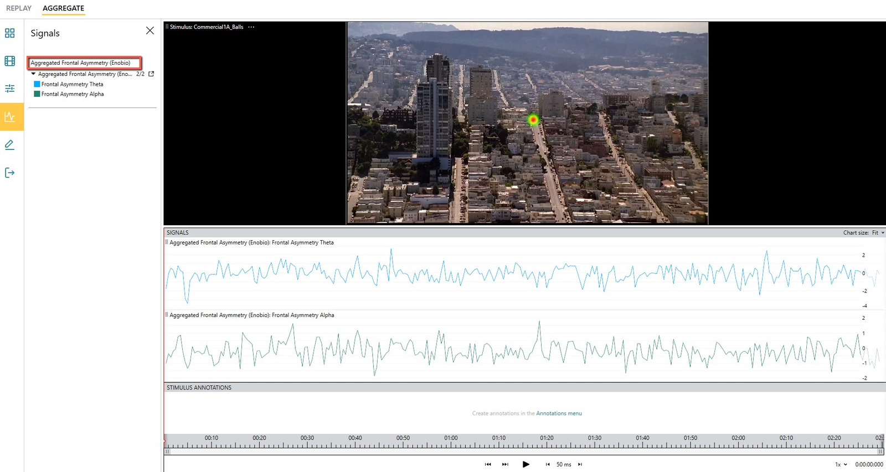
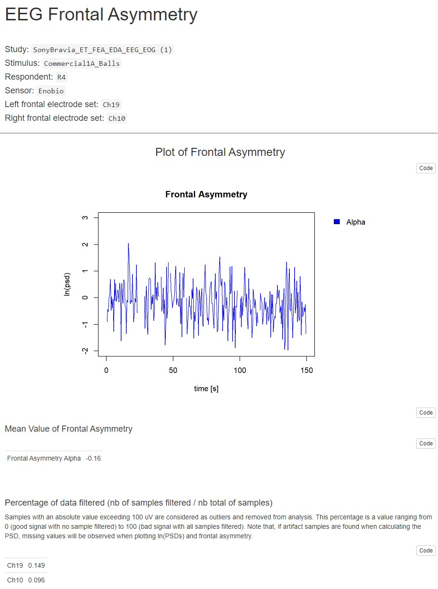
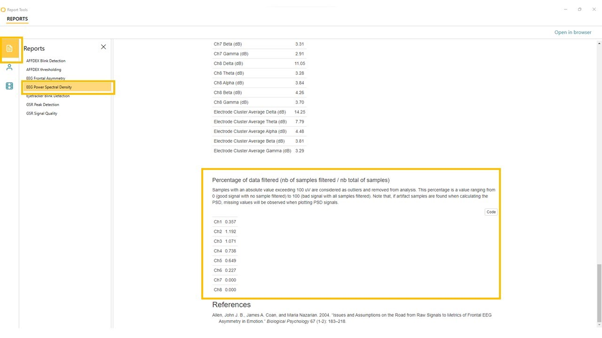
iMotions, "iMotions 8.1 - Data Reports from R Notebooks" (YouTube). The video shows an older version; 11.1 screens may differ.
7.6 The exports
- EEG Frontal Asymmetry Metrics Export, the file for the tests. In the analysis click Export, open R PROCESSING, keep Individual metrics exports, switch on EEG Frontal Asymmetry Metrics Export (the switches appear only after their notebooks ran), and click Export individual files (these labels come from the manual's screenshot; verify them in 11.1). Columns: "Study Name," "Respondent Name," "Gender," "Age," "Group," "Type," "Label," "Start (ms)," "Duration (ms)," "Parent Stimulus," "Mean Frontal Asymmetry Alpha" (one column per selected band), and "Algorithm Device Name". Type separates stimulus and annotation rows (Stimulus, Scene, Scene (Fragment), Annotation, Annotation (Instance)); "Start (ms)" counts from "the start of the study". You should see one row per respondent and stimulus plus one per annotation: 7 per Version A respondent in the simulated file (the extra is KeyScene) and 6 per Version B. That file copies the manual's columns, but its annotation Type values and single "Algorithm Device Name" column are modeled; the manual leaves one or two columns unclear, names no folder or file, and says both .csv and .txt, so verify all three. Common mistake. Testing hypotheses on replay values or aggregated scores.
- EEG Power Spectral Density Metrics Export, same tab: columns such as "Mean PSD Ch1 Theta (dB)" for each channel and band, plus the cluster average; the dB log base is not stated. Release 11.0.4 added the options "Percentage of data filtered" and "uV^2/Hz"; verify whether the first puts the rule's percentages in a file. Section 08 uses this file to check the FA export.
- EEG Intersubject Correlation Export, only if an ISC flow ran.
- Sensor data, for the FA time course. Click the study, open its EXPORT tab, choose 'Sensor data', tick 'Processed and imported data' on the File info page (not on Sensors), and click the blue 'Export': one .csv per respondent with "no down-sampling, filtering, smoothing" of the raw signal and the notebook's channels beside it. In the manual's example FA arrives every 500 ms, one value per 0.5 s step of the 1 s Welch windows. The Enobio's raw column names are not stated; read them in a pilot export.
Single multi-modal export ("select the option before exporting") is also offered, but its columns are not stated, so this workshop uses individual files.
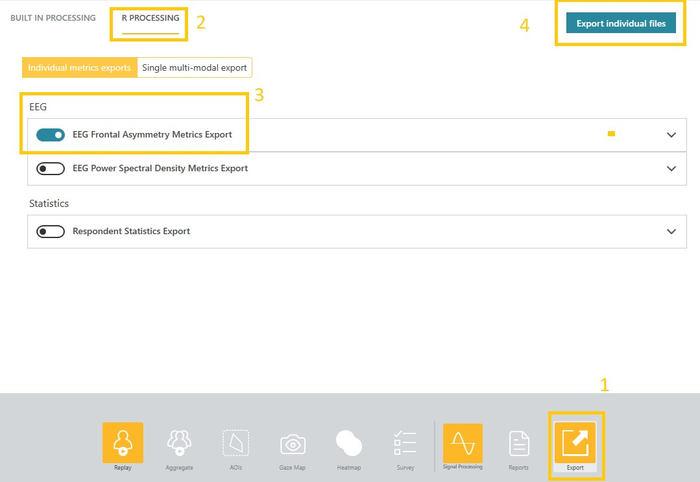
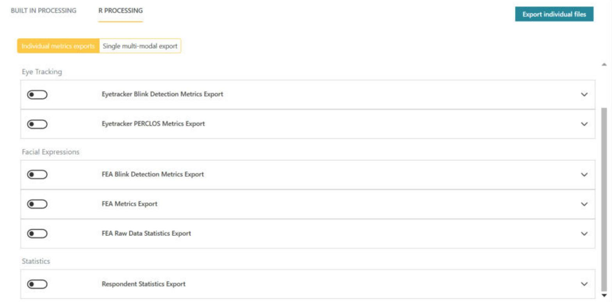
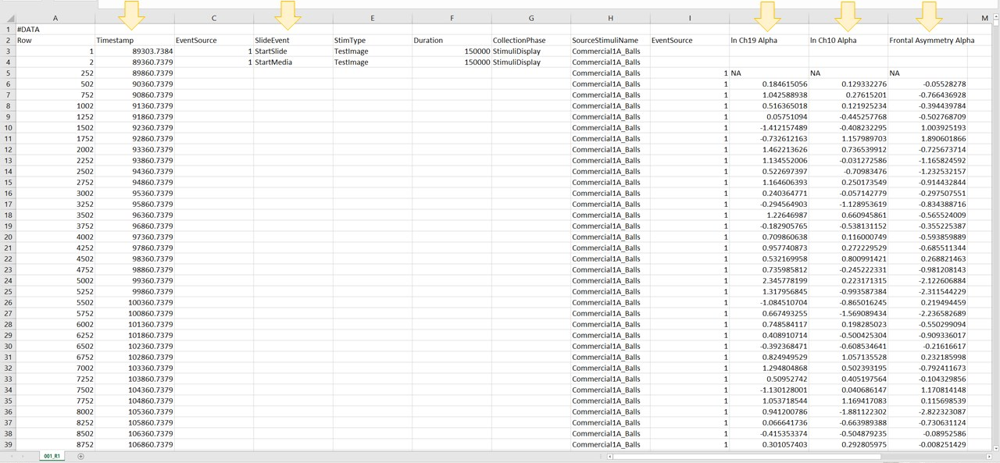
7.7 Open and file the exports safely
Open every export through Excel's Text Import Wizard, not by double-clicking (Workshop 2, section 07, and the Opening Data Export Files in Excel article), starting at the header row below the metadata (a Sensor data file has #INFO, #METADATA, and #DATA sections). Save a working copy as .xlsx and keep the original unchanged. File the exports with the study; the lab manual keeps NIC2's own recording files (.nedf) and uses the folders Raw_Data/EEG and Processed_Data.
Help center articles for this section: Analysis Overview, R Notebook: EEG Frontal Asymmetry (FA), R Notebook: EEG Power Spectral Density (PSD), R Notebook: EEG Intersubject Correlation (ISC), Adding the same R-notebook multiple times to an Analysis, Annotations, Using Annotations, Scene Editor, iMotions Reports, How to check EEG data quality, R Processed EEG Export Files, Export: Signal Processed Data, Export: Sensor Data, and Opening Data Export Files in Excel. Manual PDFs on this site: R Notebook: EEG Frontal Asymmetry (FA), R Notebook: EEG Power Spectral Density (PSD), and R Processed EEG Export Files (PDF).
Testing the hypotheses: own baselines, a paired test, a between subjects test with a power note, and a mixed model
This section runs the planned tests on the SIMULATED exports, in R with analysis.R (output in analysis_output.txt) and then in Excel. Every statistic is simulated and matches that output exactly. Frontal asymmetry (FA) is in natural log units throughout.
Read the exports, then check them against each other
The FA export has 312 rows for 48 respondents: 7 per Version A respondent (two baselines, two commercials, KeyScene, two EndScene rows) and 6 per Version B respondent. Its column names are the manual's; the Type values, Parent Stimulus on stimulus rows, the single Algorithm Device Name column, and the layouts of the artifact report, session log, and survey are modeled, so verify them on the lab machine. Because the annotation label EndScene appears on every commercial, a row is identified by Label and Parent Stimulus together.
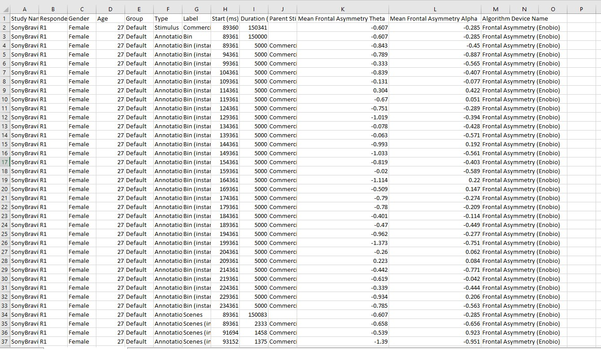
The script confirms that every annotation lies inside its parent stimulus, that EndScene starts 10000 ms before the end of its commercial and KeyScene 32000 ms into Commercial_1A, and that the three exports have identical rows. One check links two exports: the simulated PSD export writes dB as 10 log10 of power (a modeled choice; the manuals do not state the base), so 4.343 dB equals one natural log unit, and FA recomputed as (Ch6 alpha dB minus Ch5 alpha dB) divided by 4.343 agreed with the exported FA, r = .994 over 292 rows (simulated).
The exclusion rule, applied
The rule, written before collection: exclude a respondent when more than 25 percent of the F3 or F4 samples were removed by the artifact threshold in any baseline or commercial (artifact report), or when the session log records a Red NIC2 status at F3 or F4 that could not be fixed. It removed three (simulated):
- P27 (Version A): F4 stayed Red after re-seating, gel twice, and a lead swap; 41.78 percent of F4 removed in Commercial_1A. Its FA values, 0.630 to 0.762, lay outside the kept range, -0.357 to 0.385.
- P41 (Version A): an LSL stream gap of about 8.6 s in Commercial_2, then drift; 30.42 percent of F4 and 28.90 percent of F3 removed.
- P45 (Version B): heavy movement and blinking; 30.64 percent of F3 removed in Commercial_1B.
That leaves 45 respondents, 22 in Version A and 23 in Version B. In the kept rows the median percentage removed was 1.46 (90th percentile 6.01, maximum 22.83); nine kept respondents had a Red status fixed before recording, and 19 of 48 were recorded with Yellow, which the rule allows. The respondent, not the row, is the unit of analysis.
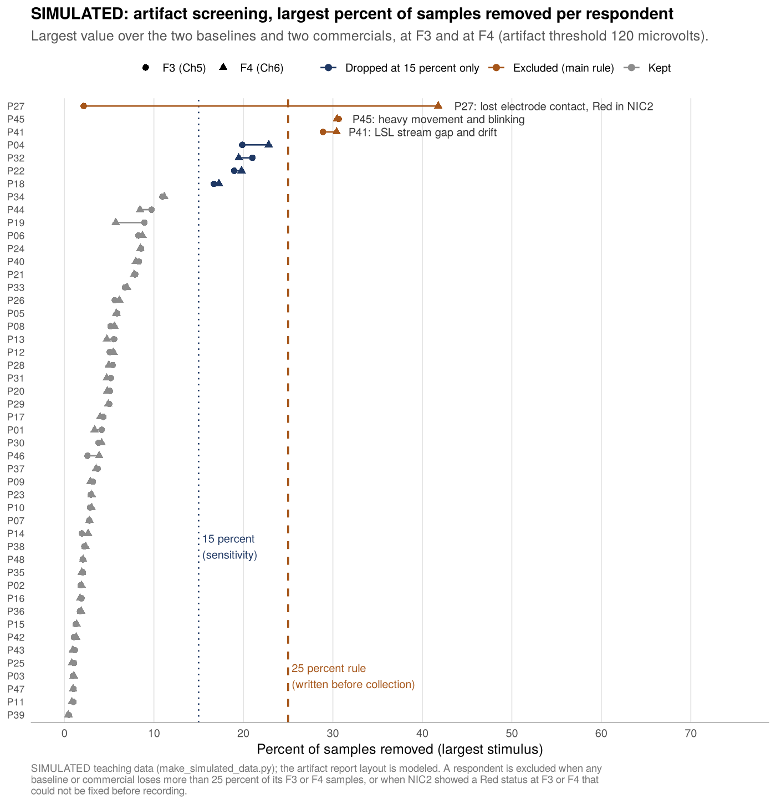
Baselines and change scores
Baseline FA was M = -0.052 (SD = 0.130) for Baseline_1 and M = -0.054 (SD = 0.128) for Baseline_2, t(44) = -0.21, p = .834, and a respondent's two baselines correlated r = .82 (simulated): comparable baselines, and a stable personal level that the change score removes. Each commercial is compared with the baseline right before it, which depends on the order: Baseline_1 for Commercial 1 in a C1first respondent, Baseline_2 in a C2first respondent.
H1: the key scene against its own baseline
For each Version A respondent, subtract the FA in the baseline before Commercial_1A from the FA during the key scene, the 6 s scene only Version A contains. If the scene changed nothing, these changes would average about zero. A one sample t test on the changes, the same as a paired t test, asks whether their average is far from zero relative to how much they vary.
Simulated: Md = 0.097, SDd = 0.142, n = 22, so t(21) = 3.21, p = .004, 95% CI [0.034, 0.160].
FA rose from -0.090 (SD 0.104) to 0.008 (SD 0.157), and 17 of 22 respondents were higher during the scene (simulated). The effect size dz, the mean change divided by the SD of the changes (Lakens, 2013), was 0.68, 95% CI [0.21, 1.14], from the noncentral t distribution. The Wilcoxon signed rank test, which ranks the changes instead of assuming normality, agreed (V = 210, p = .007), and a Shapiro Wilk test of normality gave p = .821. H1 was supported. The key scene change was noisier than the whole commercial change (SD 0.142 against 0.098) and correlated less with its baseline (r = .46 against .63): 11 windows average out less noise than 119.
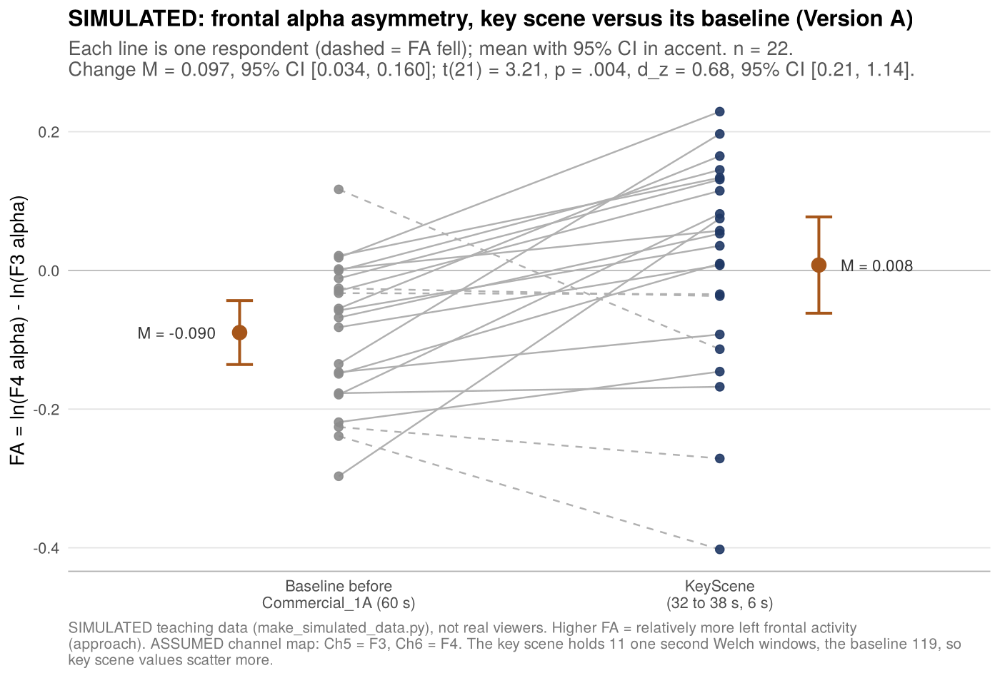
H2: the end scene, Version A against Version B
Different people saw the two versions, so H2 is a between subjects comparison of the baseline corrected FA in the end scene, the last 10 s of Commercial 1, where the brand appears. Welch's t test compares two independent groups without assuming equal variances, the recommended default (Delacre et al., 2017). Version A was higher, 0.033 (SD 0.124) against -0.012 (SD 0.123), a difference of 0.045, 95% CI [-0.029, 0.119], but Welch t(42.87) = 1.22, p = .229 (simulated). Hedges' g, the difference in pooled SD units with a small sample correction, was 0.36, 95% CI [-0.22, 0.94], and the Mann Whitney test, the rank based check for two groups, agreed (W = 313, p = .177). H2 was not supported.
The interval runs from a small reversal to a large effect, so the result is inconclusive, not evidence of no effect. A power analysis, how likely a design is to detect an effect of a given size, shows why: at d = 0.36 a new study needs 120 respondents per version (240 in total) for 80 percent power, and with 22 and 23 the power was 0.22. A within subjects test at the H1 effect size (dz = 0.68) needs 19, because it removes the differences between people from the error term.
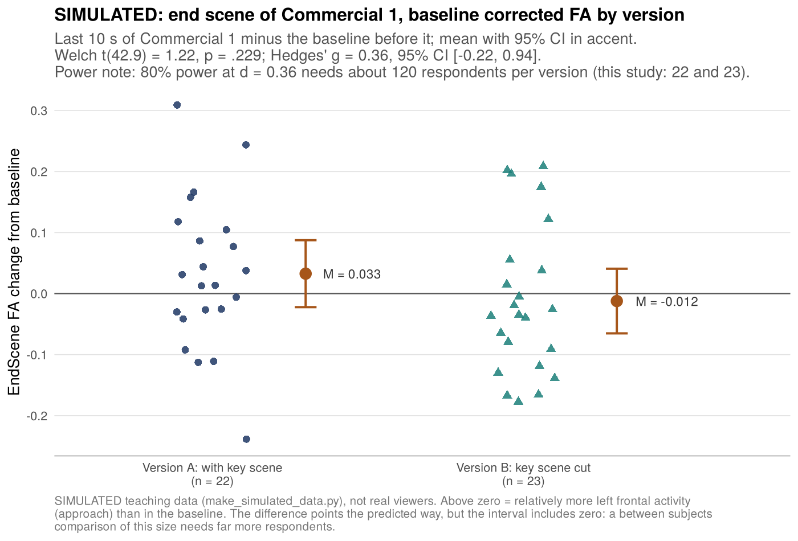
H3: the two commercials, and the mixed model
H3 compares the whole commercial changes within all 45 respondents: Commercial 1 -0.029 (SD 0.081), Commercial_2 0.004 (SD 0.085), a difference of 0.033, 95% CI [-0.001, 0.066], paired t(44) = 1.98, p = .055, dz = 0.29, 95% CI [-0.01, 0.59] (simulated). The Wilcoxon check gave V = 703, p = .037, so the two tests fall on opposite sides of .05. The plan named the paired t test, so it is the test of H3, and H3 was not supported at .05; the Wilcoxon result is reported as the check, and the estimate with its interval says what is known: a small difference, measured imprecisely. Switching to whichever test crosses the line after seeing both is the flexibility that inflates false positives.
Each respondent contributes two change scores, and in counterbalanced order the commercial seen second could differ through fatigue or carryover. A linear mixed effects model, fa_change ~ commercial * version + position + (1 | respondent) (Bates et al., 2015), with a random intercept for each respondent's personal level, factors coded -0.5 and +0.5, and Satterthwaite tests from lmerTest, estimates these at once: commercial b = 0.0323, SE = 0.0167, t(42.0) = 1.94, p = .059; version b = 0.0021, p = .911; position (second minus first) b = 0.0006, p = .971; commercial by version b = -0.0450, p = .184. The intraclass correlation (ICC), the share of remaining variance between respondents, was .110 (.069 without the fixed effects), low because the baseline correction already removed each person's stable level (simulated). Two commercials are two stimuli; claims about commercials in general need stimulus sampling, several stimuli treated as a random factor (Judd et al., 2012).
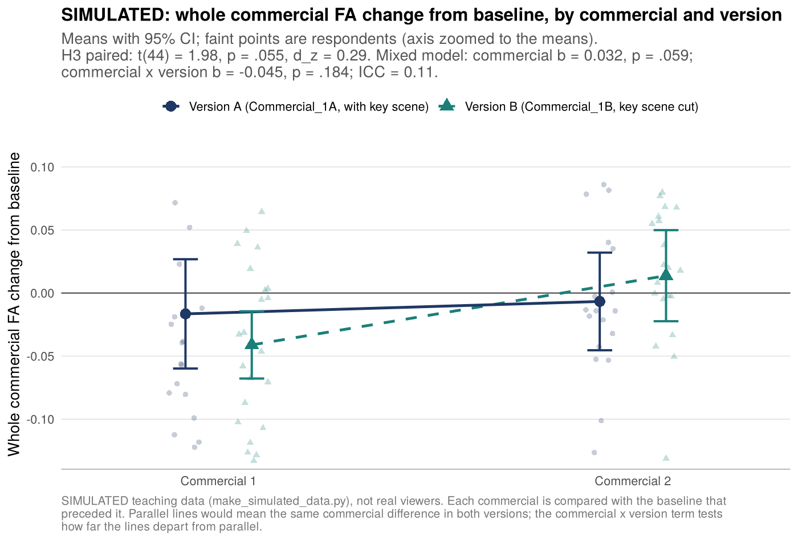
Exploratory analyses, sensitivity analyses, and the default channels
Exploratory, because no hypothesis was written for them (simulated): liking (1 to 7) was 5.55 for Commercial_1A, 4.96 for Commercial_1B, and 5.31 for Commercial_2, and the FA change correlated r(43) = .17, p = .261, and r(43) = .29, p = .051, with liking of Commercial 1 and Commercial_2, the modest link expected when approach is not liking. Nineteen of 22 recalled the key scene; 34 of 45 named the brand. Frontal midline theta (Mean PSD Ch1 Theta (dB), assumed Fz) rose 0.44 dB and 0.35 dB during the commercials while alpha over all eight channels fell 0.51 dB, the pattern of rising attention and load, kept as a description.
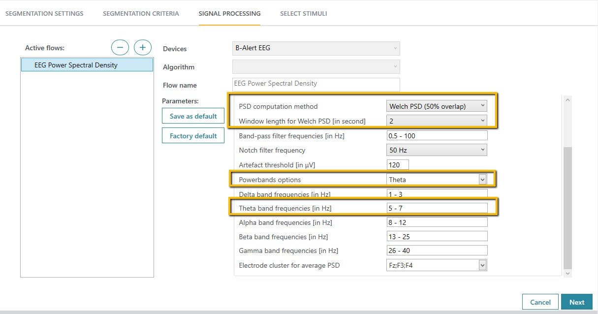
A sensitivity analysis reruns the plan under another defensible choice. At a 15 percent threshold P04, P18, P22, and P32 also drop (n = 41): H1 held, t(19) = 3.03, p = .007, dz = 0.68, and H2 stayed nonsignificant, p = .318. Without baseline correction the key scene effect vanished (raw KeyScene FA against zero, t(21) = 0.23, p = .819), and the raw end scene difference reversed sign, -0.021, because by chance the Version A baselines were 0.066 lower (simulated).
The export made with the notebook's Enobio defaults, left Ch1 and right Ch7 (Fz and P3 under the assumed montage), shows what a wrong channel map does: baseline "FA" averaged 0.681 instead of -0.053, and the key scene effect disappeared, change -0.011, t(21) = -0.40, p = .691 (simulated). Nothing in the export flags it. Mean baseline alpha was highest at the channels assumed to be Oz (12.63 dB) and Pz (11.77 dB) and lowest at the frontal ones (8.12 to 8.25 dB), as the assumed montage predicts, so an "FA" near +0.7 is a parietal over frontal alpha ratio. The check supports the map; only the NIC2 protocol proves it.
Shapiro Wilk tests showed no departure from normality (H1 p = .821; H2 p = .962 and .061; H3 p = .558; mixed model residuals p = .675, intercepts p = .876), and the H2 variances were nearly equal, ratio 1.02 (simulated).
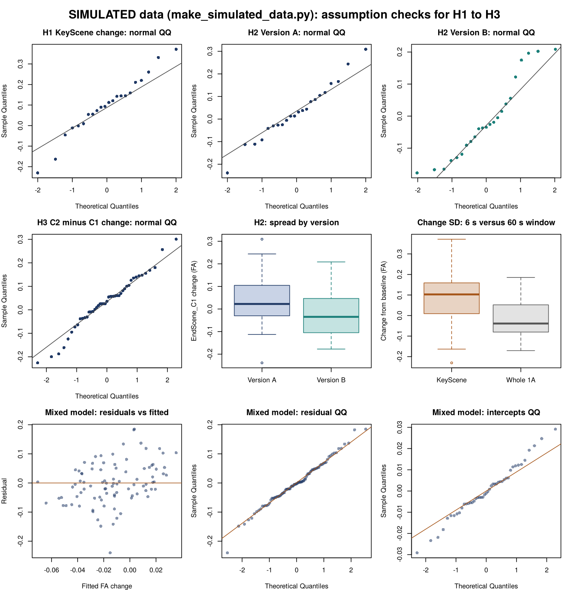
The script, line by line
Code from analysis.R, in order (the plotting code of its step 14 is left out), with its output of October 10, 2026.
The Excel route
Without R, use SIMULATED_eeg_analysis.xlsx and analysis_excel_walkthrough.md. Import each file as the Opening Data Export Files in Excel article describes: File > Open > Browse, All Files, Delimited, start at row 3 for the two FA files (they carry a # SIMULATED and a # METADATA line) and row 2 for the others, Comma, a dot as decimal separator under Advanced, Finish. Leave NA as text; a zero FA would be a real value. On the Data sheet, column G holds Label, J Parent Stimulus, and K Mean Frontal Asymmetry Alpha; helper columns M to Q add Version, Order, Role, Keep, and Keep15.
| Quantity | Cell | Formula | Simulated result |
|---|---|---|---|
| Role in the design | Data!O2 | =IF(F2="Stimulus",IF(LEFT(G2,8)="Baseline",G2,IF(LEFT(G2,12)="Commercial_1","C1","C2")),IF(G2="KeyScene","KeyScene",IF(LEFT(J2,12)="Commercial_1","EndScene_C1","EndScene_C2"))) | Baseline_1 to EndScene_C2 |
| Keep (exclusion rule) | Data!P2 | =IF(COUNTIFS(Artifact!$B$2:$B$385,B2,Artifact!$K$2:$K$385,">25")+COUNTIFS(Log!$A$2:$A$49,B2,Log!$H$2:$H$49,"Red")+COUNTIFS(Log!$A$2:$A$49,B2,Log!$I$2:$I$49,"Red")>0,"No","Yes") | No for P27, P41, P45 |
| Baseline before Commercial_1A | H1!D5 | =IF($B5="C1first",SUMIFS(Data!$K$2:$K$313,Data!$B$2:$B$313,$A5,Data!$O$2:$O$313,"Baseline_1"),SUMIFS(Data!$K$2:$K$313,Data!$B$2:$B$313,$A5,Data!$O$2:$O$313,"Baseline_2")) | per respondent |
| Change (KeyScene minus baseline) | H1!F5 | =E5-D5 | per respondent |
| Mean change | H1!L11 | =AVERAGE(F5:F26) | 0.097 |
| Paired t | H1!L14 | =L11/L13 | 3.21 |
| p, paired | H1!L16 | =T.TEST(D5:D26,E5:E26,2,1) | 0.00421 |
| dz | H1!L22 | =L11/L12 | 0.68 |
| H2 difference, A minus B | H2!J12 | =J6-J9 | 0.045 |
| Welch df | H2!J15 | =(J7^2/J8+J10^2/J11)^2/((J7^2/J8)^2/(J8-1)+(J10^2/J11)^2/(J11-1)) | 42.87 |
| p, Welch | H2!J16 | =T.TEST(G5:G26,G27:G49,2,3) | 0.22864 |
| Hedges' g | H2!J25 | =J24*J23 | 0.36 |
| H3 p, paired | H3!O16 | =T.TEST(F5:F49,I5:I49,2,1) | 0.05455 |
| Default channels, mean change | H1!L75 | =AVERAGE(I5:I26) | -0.011 |
T.TEST's fourth argument 1 means paired (H1, H3) and 3 means Welch (H2). T.TEST returns only p, so t, dz, and g are computed by hand, and Excel's large sample intervals differ slightly from R's exact ones (dz [0.22, 1.15] in H1!L24 and H1!L25). The Wilcoxon and Mann Whitney tests, the mixed model, the power analysis, and the theta and PSD checks need R. The Check sheet counts mismatches with R in Check!B204; it should be 0.
Help center articles for this section: Opening Data Export Files in Excel, R Processed EEG Export Files, R Notebook: EEG Frontal Asymmetry (FA), and How to calculate mental workload metrics using EEG R Notebook.
Writing the results: asymmetry in sentences, a table, and honest captions
A results section reports what was found, in the planned order, and leaves interpretation to the discussion. The reporting standards ask for the sample with every exclusion and its reason, the descriptives, and for each hypothesis a test with an effect size and its interval (Appelbaum et al., 2018); the EEG guidelines add the recording and processing details (Keil et al., 2014). Every statistic here is simulated; the form is the lesson.
The shape of an EEG results section
Open with data quality: 45 respondents analyzed (22 and 23) after three exclusions, each with its reason, and the percentage of samples removed. Then the baselines, and the sign conventions stated once: FA is in natural log units, every change score is a segment minus the baseline that preceded its commercial, H2 is Version A minus Version B, and H3 is the Commercial_2 change minus the Commercial 1 change. Take the hypotheses in order, each with means and SDs, the difference and its interval, the planned test, the effect size with its interval, and the rank based check in a clause; the mixed model follows H3, then the labeled exploratory and sensitivity analyses.
APA numbers
APA style keeps numbers readable (simulated values): M = 0.008, SD = 0.157; the statistic with its degrees of freedom, t(21) = 3.21, or Welch t(42.87) = 1.22 with the fractional df; then p; then the effect size with its interval, dz = 0.68, 95% CI [0.21, 1.14]. Give exact p values to three decimals (p = .004), and p < .001 only below that. Drop the leading zero for values that cannot exceed 1 (r = .82, ICC = .110, p = .229) and keep it for FA values, dz, g, and b. Keep the minus sign of a negative FA (-0.090), match each sign to the direction in words, and write "did not reach significance," never "a trend toward significance."
Model paragraphs (simulated)
From section (b) of results_text.md. The data quality paragraph leaves out two sentences that section 08 reports (the check across exports and the alpha pattern). The H1 and H2 paragraphs are unchanged. In the H3 paragraph "fell just short of significance" now reads "did not reach significance," as this workshop's style requires, and the mixed model sentences are left out (section 08 reports them).
In the 45 kept respondents the median percentage of samples removed per stimulus and channel was 1.46 (90th percentile 6.01, maximum 22.83). Nine kept respondents had a Red status at the first impedance check that was fixed before recording, and 19 of the 48 respondents were recorded with a Yellow status at F3 or F4, which the rule allows. The excluded respondent with the lost F4 contact would have been a clear outlier: this respondent's stimulus FA values ranged from 0.630 to 0.762, against -0.357 to 0.385 for all kept respondents. Baseline FA was M = -0.052 (SD = 0.130) for Baseline_1 and M = -0.054 (SD = 0.128) for Baseline_2, t(44) = -0.21, p = .834; the two baselines were strongly correlated (r = .82), and 61 of the 90 baseline values (67.8 percent) were negative.
Among the Version A respondents (n = 22), FA rose from M = -0.090 (SD = 0.104) in the baseline before Commercial_1A to M = 0.008 (SD = 0.157) during the key scene, a mean change of 0.097 (SD = 0.142), 95% CI [0.034, 0.160], t(21) = 3.21, p = .004, dz = 0.68, 95% CI [0.21, 1.14]. The Wilcoxon signed rank test agreed (V = 210, p = .007), and the changes showed no departure from normality (Shapiro Wilk p = .821). Seventeen of the 22 respondents had a higher FA during the key scene than in their baseline. H1 was supported. Key scene scores were noisier than whole commercial scores: the SD of the change was 0.142 for the 6 s key scene against 0.098 for the whole Commercial_1A, and the key scene FA correlated less with its baseline (r = .46) than the whole commercial did (r = .63).
The baseline corrected FA during the end scene of Commercial 1 was higher in Version A (M = 0.033, SD = 0.124, n = 22) than in Version B (M = -0.012, SD = 0.123, n = 23), a difference of 0.045, 95% CI [-0.029, 0.119], but the difference was not significant, Welch t(42.87) = 1.22, p = .229, Hedges' g = 0.36, 95% CI [-0.22, 0.94] (Cohen's d = 0.36, 95% CI [-0.23, 0.95]). The Mann Whitney test agreed (W = 313, p = .177). H2 was not supported. The interval is compatible both with no difference and with a large one, so the result is inconclusive rather than evidence of no effect. At the observed d = 0.36, a study would need 120 respondents per version (240 in total) for 80 percent power (two tailed, alpha = .05); with 22 and 23 respondents the power at this effect size was 0.22. By comparison, a within subjects test at the H1 effect size (dz = 0.68) needs 19 respondents.
Across the 45 kept respondents, the whole commercial FA change was M = -0.029 (SD = 0.081) for Commercial 1 and M = 0.004 (SD = 0.085) for Commercial_2. The difference, 0.033 (SD = 0.112), 95% CI [-0.001, 0.066], did not reach significance, t(44) = 1.98, p = .055, dz = 0.29, 95% CI [-0.01, 0.59], whereas the Wilcoxon signed rank test fell just below .05 (V = 703, p = .037); 30 of the 45 respondents had a larger change for Commercial_2. H3 was not supported at alpha = .05; the estimate points toward a slightly more positive response to Commercial_2, but the evidence is weak.
When the planned test and its check disagree, and when a test is not significant
H3 shows the first case: the planned paired t test gave p = .055 and the Wilcoxon check p = .037. Report the planned test as the test of the hypothesis, the check in a clause, and the estimate with its interval, 0.033 [-0.001, 0.066]; choosing the significant one after seeing both turns a check into a second chance. H2 shows the second: an honest report gives the direction and size of the estimate, the interval that shows its uncertainty, and the power the design had. "No effect" claims more than the data show; "the study could not tell, and a conclusive test would need this many respondents" claims exactly what they show.
A model table
| Table 1 (simulated). FA change from the preceding baseline | Version A (n = 22), M (SD) | Version B (n = 23), M (SD) | All (n = 45), M (SD) |
|---|---|---|---|
| Key scene (Commercial_1A, 6 s) | 0.097 (0.142) | not in Version B | not in Version B |
| End scene of Commercial 1 (last 10 s) | 0.033 (0.124) | -0.012 (0.123) | 0.010 (0.124) |
| End scene of Commercial_2 (last 10 s) | -0.022 (0.087) | 0.010 (0.140) | -0.006 (0.117) |
| Whole Commercial 1 | -0.017 (0.098) | -0.041 (0.062) | -0.029 (0.081) |
| Whole Commercial_2 | -0.007 (0.087) | 0.014 (0.083) | 0.004 (0.085) |
| Commercial_2 change minus Commercial 1 change | 0.010 (0.133) | 0.055 (0.084) | 0.033 (0.112) |
Note. SIMULATED teaching data; 45 respondents after three exclusions. FA = ln(F4 alpha) - ln(F3 alpha) under the assumed channel map, in natural log units; each change is the segment minus the FA of the baseline that immediately preceded its commercial, and a positive change means relatively more left frontal activity than in that baseline. Raw baseline FA: Baseline_1 M = -0.052 (SD = 0.130), Baseline_2 M = -0.054 (SD = 0.128).
A model figure caption
A caption says what is plotted, for whom, and what the marks mean, so the figure stands alone:
What the demo's own chart can and cannot show
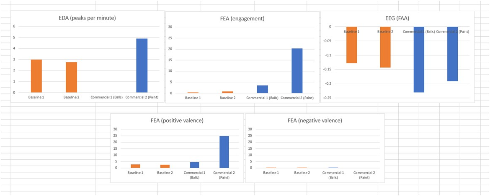
The article reads Paint as "a relatively stronger approach motivation (i.e., less negative, hence more positive, frontal alpha asymmetry scores)," which follows the relative rule: the comparison carries meaning, the negative sign does not. But the chart shows raw group means for four people, with no spread, no change from each person's own baseline, no test, and both versions of Balls pooled, so a key scene effect could not appear in it. The article says so itself: "more than four respondents would be needed to draw statistically relevant conclusions." It demonstrates a workflow, not a result.
The client version
Three sentences carry the direction, the size, and the hedge, without turning approach motivation into approval.
The key scene shifted viewers' frontal brain activity toward the pattern linked with approach motivation, compared with their own resting level, and 17 of 22 viewers showed the shift. Whether it carried over to the end of the commercial, where the brand appears, could not be determined: the difference pointed the expected way, but a conclusive test would need about 120 viewers per version. Approach is not liking (the FA article notes that anger can trigger it), liking ratings were only modestly related to the brain measure, and these are simulated data from 45 viewers in a laboratory.
Help center articles for this section: R Processed EEG Export Files, R Notebook: EEG Frontal Asymmetry (FA), How to check EEG data quality, and Demo study: Sony Bravia (Testing of video-commercials) 9.0.
Discussion and publication: approach without liking, what limits the claim, and where the work goes
The discussion answers the client's question from section 01, whether the key scene makes people want the brand more, says what the answer means and does not mean, lists the limitations that bound it, and places the work in a literature. It is also where overclaiming happens, so every claim below is tied to a result or a source. The numbers are simulated.
What the result means, and what it does not
In this simulated sample the key scene shifted frontal asymmetry toward relatively more left frontal activity than the baseline before it (dz = 0.68), which the literature reads as approach motivation (Harmon-Jones & Gable, 2018). That answers "did the scene move viewers toward approach," not "did they like it" or "will they buy." Approach can come with anger, the FA article notes, and the FA change was only weakly to moderately related to liking (r = .17 and .29). Reading "the viewers liked the key scene" from a brain measure is reverse inference, inferring one mental state from a signal that several states can produce; it holds only as far as the measure is specific to that state, and it is among the challenges that reviews of consumer neuroscience take up (Plassmann et al., 2015) (Karmarkar & Plassmann, 2019).
In these simulated data, the key scene moved frontal asymmetry toward relatively greater left frontal activity than the baseline before the commercial, a medium to large within subjects effect (dz = 0.68) that held under a stricter artifact rule. In the frontal asymmetry literature such a shift is read as approach motivation (Harmon-Jones & Gable, 2018), and the design follows the scene level comparison that Ohme and colleagues used to study a Sony Bravia commercial and its frog scene with EEG (Ohme, Matukin, & Szczurko, 2010) (Ohme, Reykowska, et al., 2010). Whether the key scene carried over to the end of the commercial, where the brand appears, remains open. The end scene difference pointed the predicted way but was small and imprecise (g = 0.36, 95% CI [-0.22, 0.94]), and with 22 and 23 respondents the study had about one chance in five of detecting an effect of that size; a nonsignificant result of this kind says the study could not tell, not that the effect is absent. Commercial_2 drew a slightly more positive change than Commercial 1, but the evidence was weak: the t test (p = .055) and the Wilcoxon test (p = .037) fell on opposite sides of .05, which is a reminder to report the estimate and its interval rather than to sort results by a threshold. Frontal midline theta rose and alpha fell during both commercials, the pattern that accompanies attention and processing load, but with no hypothesis this stays a description.
Limitations of an FA test of commercials
- Simulation. The data follow planned effects; they demonstrate the analysis, not the effect.
- The channel map. Only the NIC2 protocol says which site each of Ch1 to Ch8 holds. The map was assumed, and the default channel contrast showed that a wrong pair erases the key scene effect with no warning in the export. The map, the reference, and the electrode sets belong in every methods section (Keil et al., 2014).
- A short window. The 6 s key scene gives about 11 one second windows against 119 for a whole commercial, and its change was noisier (SD 0.142 against 0.098); short scenes need more respondents, longer windows, or repeated exposures.
- Between subjects power. H2 was a between subjects comparison; a conclusive test at the observed effect would need about 120 respondents per version, more than five times the present sample.
- Two baselines. The second baseline follows a commercial and a rating slide, drift over the session enters the change score, and 60 s is shorter than the baseline periods in the lab manual.
- One pair of commercials. The results describe these stimuli; general claims need several stimuli treated as a random factor (Judd et al., 2012).
- The artifact rule. The 120 microvolt threshold leaves smaller blinks and muscle activity in the frontal channels, the manuals give both 120 and 100, and the artifact report is a modeled table; the 15 percent sensitivity analysis changed no conclusion.
- FA is relative and depends on processing. Scores carry meaning only against each other and depend on choices such as the reference and the electrode pair (Allen et al., 2004) (E. E. Smith et al., 2017).
State and trait
A respondent's two baselines correlated r = .82: much of an asymmetry score is a stable, trait like level that the person brings to the session, and a smaller part is the state that a commercial changes. The change score removes the trait, which is why the ICC of the change scores was only .110. Whether scores are dependable enough to compare moments is a reliability question; see Towers and Allen (2009) on estimating the internal consistency of asymmetry scores.
Combining sensors, and predicting the market
Each sensor answers a different question on the same timeline. Eye tracking (Workshop 2) shows what each viewer was looking at during the key scene, so an FA change can be read against whether the scene was seen. Facial expression analysis (Workshop 3) adds expressed valence, the pleasant or unpleasant direction FA does not give. Skin conductance (Workshop 4) adds arousal, the intensity of the response. The Sony Bravia demo was designed with a survey, eye tracking, facial expression analysis, electrodermal activity, and EEG; the lab copy's SENSORS tab lists Eye tracking (Aurora), Respondent Camera, and Lab Streaming Layer, so check on the lab computer which data it holds.
Whether brain measures predict the market is an open question. Studies have reported that brain responses to movie trailers predict individual preferences and population wide commercial success (Boksem & Smidts, 2015) and have combined neurophysiological methods with market response modeling to predict advertising success (Venkatraman et al., 2015); for the field see Smidts et al. (2014) and the critical review of branding research by Plassmann et al. (2012). This workshop's advice: pair FA with a criterion such as recall, choice, or sales, and treat FA alone as a measure of approach, not of success.
What intersubject correlation and frontal theta could add
Intersubject correlation would show whether viewers' EEG moved together during the key scene, a group score that needs at least two valid respondents; audience preferences have been reported to be predicted by the temporal reliability of neural processing (Dmochowski et al., 2014). Frontal midline theta could show whether a scene demanded more processing, the approach of the workload article built on M. E. Smith et al. (2001); iMotions has no separate workload notebook, so it is the PSD notebook with the band and channel set by hand. Neither measures motivation, and both need their own hypotheses.
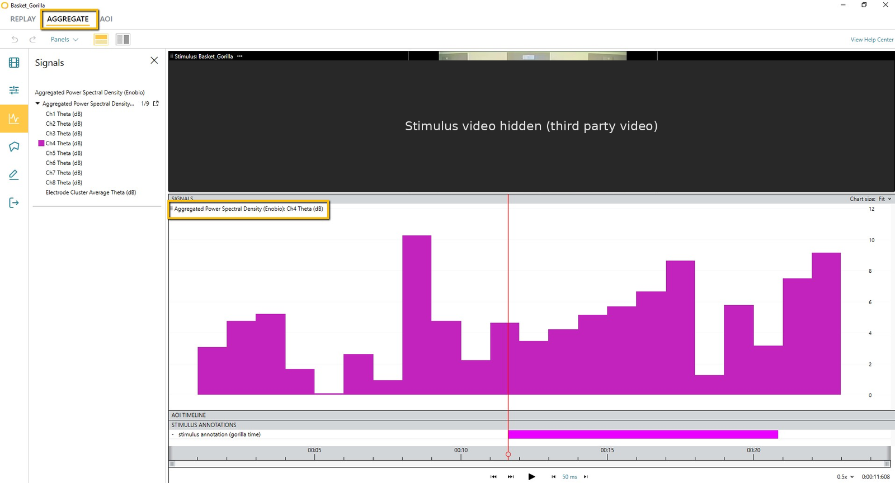
Replication, preregistration, reporting, and ethics
A preregistration, a time stamped plan filed before the first respondent, records the channel map and how it was verified, the electrode sets, bands, window, and threshold, the exclusion rule, the baseline correction, the annotation windows, the tests with their direction, and the sample size with its power reasoning. A replication would add commercials as a stimulus sample and size the between subjects comparison for a realistic effect. The report follows the general reporting standards (Appelbaum et al., 2018) and the EEG guidelines (Keil et al., 2014), including every exclusion with its rule, value, and reason.
Recording brain activity for marketing raises its own questions, set out in work on the neuroethics of neuromarketing (Murphy et al., 2008) and on its ethical implications and potential misuse (Stanton et al., 2017). At Jacksonville State a study that will be published or presented goes first to the IRB, and every session needs informed consent that names the cap and gel, the EEG recording, the screening questions (gel allergy, seizure disorders, photosensitivity), and how long the data are kept.
Where this work is published, and what reviewers ask
- Journal of Marketing Research, for a marketing contribution such as predicting market outcomes from brain responses (Boksem & Smidts, 2015) (Venkatraman et al., 2015) or the methods of consumer neuroscience (Plassmann et al., 2015).
- Journal of Consumer Psychology, which published the review of branding research (Plassmann et al., 2012), and Journal of Economic Psychology, which published the frontal asymmetry study of advertising that inspired the demo (Ohme, Reykowska, et al., 2010).
- Journal of Advertising Research, for advertising effects and executions.
- Psychophysiology, Biological Psychology, and International Journal of Psychophysiology, for a measurement contribution; they published the EEG guidelines (Keil et al., 2014), reviews of frontal asymmetry (Harmon-Jones & Gable, 2018) (Coan & Allen, 2004), work on its reliability (Towers & Allen, 2009), and the primers (Allen et al., 2004) (E. E. Smith et al., 2017).
Expect reviewers to ask how the channel map was verified, whether the electrode sets, bands, and threshold were fixed in advance, how many windows entered each segment, why scores were baseline corrected, whether the between subjects comparison had the power to answer its question, whether the sample covers more than two commercials, and whether FA showed something a liking rating could not.
Next steps
This workshop keeps the habits of the earlier ones: a baseline per stimulus, counterbalanced order, rules written before the first respondent, and every parameter recorded from the panel. It adds one: write down the channel map before anyone wears the cap. If you did Workshops 2, 3, and 4, the strongest next study records eye tracking, facial expression, skin conductance, and EEG at once, so that every change in asymmetry can be read against where the eyes were, what the face showed, and how aroused the viewer was.
Help center articles for this section: Introduction to: EEG, R Notebook: EEG Frontal Asymmetry (FA), R Notebook: EEG Intersubject Correlation (ISC), How to calculate mental workload metrics using EEG R Notebook, and Demo study: Sony Bravia (Testing of video-commercials) 9.0.
Resources: where every step of this workshop comes from
Nothing in this workshop was invented. Every menu path comes from an iMotions help center article, a Neuroelectrics document, the lab procedure manual, or the lab computer itself (screen captures made on October 10, 2026); every design rule comes from a published source or is labeled as a lab rule; and every number in the analysis comes from the simulated data files listed under (e). This section collects all of it in seven groups, so that you can go to the original when a step in the lesson is not enough. The help center at help.imotions.com is reached signed in through my.imotions.com with the lab account; every article also has a Markdown twin at the page address followed by .md. The manual PDFs under (b) are the lab's own downloaded copies, which iMotions has given Dr. Sciuchetti permission to share with this class. Every printed EEG manual carries a 2023 date and describes iMotions 8 to 9.3, so where a manual and the lab computer disagree, the lab computer running iMotions Lab 11.1 is the reference. Where the manuals are silent (which scalp site each Enobio channel holds, whether the drag order in NIC2 sets the channel numbers, the folder and file names of the EEG exports, the log base of the dB values), the workshop says so and lists the item to verify on the lab computer.
(a) iMotions help center articles used in this workshop
- Introduction to: EEG. What EEG measures, the four data quality factors (functional electrodes, consistent placement, a consistent reference, impedance), frontal asymmetry and power spectral density as the two common commercial metrics, band ranges that differ from the notebook defaults (delta 1 to 4, theta 4 to 8, gamma above 25 Hz), and the sentence about "larger left-frontal band power" and valence that Step 06 sets aside in favor of the notebook definition. (Steps 00, 01, 02, 05, 06, and 10)
- Setting up NeuroElectrics Enobio. The NIC2 steps (SCAN FOR DEVICES, TCP Connection, USE THIS DEVICE, a protocol with the electrodes placed "in the correct sequence", FINISH and SAVE, LOAD PROTOCOL, LSL Server), the Lab Streaming Layer device in Global Settings with the Enobio device profile and LSLOutletStreamName-EEG, USB as the recommended connection, and the CMS and DRL leads placed as close together as possible without touching. (Step 04)
- Neuroelectrics Enobio: Lab streaming Layer. What Lab Streaming Layer is, and where the read only Outlet details sit in iMotions. (Step 04)
- How to collect EEG data with an LSL device in iMotions. New Device, Search, Enable data collection, the sensor widget with its green display of the sampling rate, the empty outlet list that sends you back to NIC2, and the rule that the device profile must be added before you start collecting data. (Step 04)
- iMotions Global Settings. The Sensors tab that holds the Lab Streaming Layer device; on the lab computer Alt+S opens Global Settings on that tab. (Step 04)
- Using the iMotions Study Builder. The Study Builder for the Screen-based study, with the sensors selected at the study level. (Step 04)
- Latency settings. Default latency corrections per device on the study's latency settings tab; the Enobio is not listed, so it counts as "Other" at 0 ms (verify on the lab computer). (Steps 04 and 06)
- Timestamping and synchronization method. Why the precision of iMotions is "in the range of tens of milliseconds", why a wired connection is the most reliable, and why event related potential work needs photodiodes or trigger boxes. (Steps 00, 04, and 06)
- iMotions 11 release notes. The 11.0.0 rule that notebooks appear only for the corresponding sensors and recorded data, the 11.0.4 PSD export options "Percentage of data filtered" and "uV^2/Hz", and the 11.1.13 fix of "an issue with LSL-based notebook processing"; both lab computers were scheduled for 11.1.13 on October 7, 2026. (Steps 04 and 07)
- How to place the EEG-system correctly on the head. The 10-10 system, the nasion to inion and ear to ear measurements divided into tenths, the 35 cm example, and the check that Cz sits equidistant from both ears. (Step 05)
- How to check EEG data quality. Green, yellow, and red quality in NIC2 and the fixes in order, grounded plugs against line noise, drift on one channel, the blink, clench, and brow checks, live markers for noisy moments, and the Reports box with the percentage of data removed by the artifact threshold. (Steps 02, 05, 07, and 09)
- General EEG protocol for good quality raw EEG data. Background on recording clean raw EEG. The lab has no downloaded copy (04_Where_To_Look_Index lists it as online only), so read it online. (Step 05)
- How to clean Neuroelectrics Enobio electrodes and caps/headbands. Not read for this workshop and not among the lab's local copies; Step 05 follows the lab procedure manual for cleaning, so read this article before the first cleaning and tell Dr. Sciuchetti if it differs. (Step 05)
- Sensor Preview Window. The operator's live view of the signals, only on a dual screen setup; the Low and Medium graph performance modes downsample to 16 and 32 Hz. (Step 05)
- Collecting Data. Enable data collection on the Sensors tab, F12 for the Sensor Preview, Shift-F1 to end a recording, and the red outline for data below the expected quality. (Step 05)
- Using Event Markers. Live markers defined on the study's Live Markers tab before recording (Name, key, Modifier, Color). (Step 04)
- Creating Live Markers (During Data Collection). The same task with an Add Marker button; check which label 11.1 shows. (Steps 04 and 05)
- Demo study: Sony Bravia (Testing of video-commercials) - 9.0. The demo behind the worked example: Balls with and without the frog scene between subjects, Paint within subjects, two 1-minute coral reef baselines, the last 10 seconds of each commercial analyzed, all FAA bars negative, and the note that more than four respondents would be needed. (Steps 01, 02, 03, 09, and 10)
- R Notebook: EEG Frontal Asymmetry (FA). The formula as printed, FAA = ln(Alpha_F8 / Alpha_F7), the sign rule, the instruction to read the scores relative to each other, the Enobio defaults Ch1 and Ch7, the electrode set fields, and the outputs. (Steps 01, 03, 06, 07, 08, 09, and 10)
- R Notebook: EEG Power Spectral Density (PSD). The shared pre-processing (band-pass filter, notch filter, artifact threshold), Welch and the legacy method, every parameter with its default, the band ranges, and the note that Enobio channels are reported as Ch1, Ch2, and so on. (Steps 02, 06, and 07)
- How to calculate mental workload metrics using EEG R Notebook. Frontal midline theta from the PSD notebook, built on M. E. Smith et al. (2001); there is no separate workload notebook. (Steps 06, 08, and 10)
- R Notebook: EEG Intersubject Correlation (ISC). Neural synchrony computed from PSD metrics, available since iMotions 9.3.19; at least two valid respondents are needed. (Steps 06, 07, and 10)
- What are R-Notebooks?. The list of EEG notebooks (Power Spectral Density, its Aggregation, Frontal Asymmetry, its Aggregation, and Intersubject Correlation), which is why the workshop says there is no workload notebook. (Steps 06 and 10)
- Analysis Overview. Add Analysis, the segmentation criteria, and the Signal Processing page where Active flows, Devices, and Algorithm are chosen. (Step 07)
- Adding the same R-notebook multiple times to an Analysis. Why repeated flows need unique names; without one the notebook is added but not executed. (Step 07)
- Annotations. Stimulus annotations for videos, which play at the same speed for every respondent, with Step set to Frame; automated annotations and binning, with the Sony Bravia demo as the binning example. (Steps 03 and 07)
- Using Annotations. Setup annotation with Offset, Multiple start/end triggers, and Subdivide intervals; annotations as measurement windows in the R exports. (Step 07)
- Scene Editor. Isolating part of a video as a scene that becomes its own stimulus; video scenes from a recording are made after data collection. (Steps 03 and 07)
- iMotions Reports. The HTML report at the analysis level, grayed out until a notebook has been added; for FA it is produced only for the individual notebook. (Step 07)
- R Notebook Epoching. The epoching notebooks prepare GSR, ECG, and EMG data, not EEG, which is why this workshop marks its EEG windows with annotations instead. (background for Step 07)
- R Processed EEG Export Files. The EEG Frontal Asymmetry and Power Spectral Density metrics exports, the path to them, and their exact columns, including Mean Frontal Asymmetry Alpha; the folder and the file names are not stated. (Steps 03, 07, 08, and 09)
- Export: Signal Processed Data. The Individual metrics and Single multimodal exports from the R-processing tab; the article calls the files .csv in one paragraph and .txt in the next, so verify on the lab computer. (Step 07)
- Export: Sensor Data. The sample by sample export, one file per respondent with no down-sampling or filtering; tick Processed and imported data on the File info page to include the notebook signals. (Step 07)
- Opening Data Export Files in Excel. The import route into Excel, and why not to double click a .csv export. (Steps 07 and 08)
- Creating Excel Pivot Tables. The generic PivotTable steps behind the descriptive table of the Excel route. (Step 08)
(b) The lab's manual PDFs on this site
Local copies of the articles above, for the moments at the lab computer when you cannot sign in. Thirteen are new with this workshop; R Notebook Epoching.pdf was already listed in Workshop 4.
- Introduction to EEG.pdf. What EEG measures, the bands, FA and PSD, and the valence sentence the lab does not follow (7 pages); online title: Introduction to: EEG.
- How to place the EEGsystem correctly on the head.pdf. The 10-10 system and measuring the head (6 pages); online title: How to place the EEG-system correctly on the head.
- Setting up NeuroElectrics Enobio.pdf. NIC2, the protocol, and the Lab Streaming Layer device in iMotions (10 pages).
- Neuroelectrics Enobio Lab streaming Layer.pdf. The Lab Streaming Layer panel and Outlet details (4 pages); online title: Neuroelectrics Enobio: Lab streaming Layer.
- How to collect EEG data with an LSL device in iMotions.pdf. New Device, Search, and the device profile (8 pages).
- Timestamping and synchronization method.pdf. Timing precision, latency, and why ERPs need trigger hardware (10 pages).
- How to check EEG data quality.pdf. Quality checks before, during, and after recording (9 pages).
- Demo study Sony Bravia Testing of videocommercials 90.pdf. The demo study behind the worked example (9 pages); online title: Demo study: Sony Bravia (Testing of video-commercials) - 9.0; the file name keeps a double space before 90.
- R Notebook EEG Frontal Asymmetry FA.pdf. The FA formula, the sign rule, the electrode sets, and the outputs (19 pages); online title: R Notebook: EEG Frontal Asymmetry (FA).
- R Notebook EEG Power Spectral Density PSD.pdf. The pre-processing, Welch and legacy windows, and every parameter (17 pages); online title: R Notebook: EEG Power Spectral Density (PSD).
- How to calculate mental workload metrics using EEG R Notebook.pdf. Frontal midline theta with the PSD notebook (12 pages).
- R Notebook EEG Intersubject Correlation ISC.pdf. Neural synchrony from PSD metrics (15 pages); online title: R Notebook: EEG Intersubject Correlation (ISC).
- R Notebook Epoching.pdf. Why EEG is binned with annotations here (11 pages); already listed in Workshop 4.
- R Processed EEG Export Files.pdf. The FA and PSD metrics exports and their columns (7 pages).
(c) Official videos
Only videos listed in the lab's verified vendor index (Project document 09_Vendor_Resources_Index) appear here. The two iMotions videos were recorded for iMotions 8.1, so their screens differ from Lab 11.1; use them for the idea and the lab computer for the labels.
- Enobio Setup (Neuroelectrics, 2:12). The official setup video: headcap, electrodes, the Necbox, and the NIC2 connection. Watch it before fitting the cap and connecting NIC2 (Step 05).
- Enobio Unboxing (Neuroelectrics, 1:28). What is in the Enobio kit (Step 00).
- iMotions 8.1 - Data Reports from R Notebooks (iMotions). Generating data reports from the built-in R Notebooks, the idea behind the Reports box (Step 07).
- iMotions 8.1 - Updated R Notebooks (iMotions). What changed in the R Notebooks used for sensor data analysis; background for Steps 06 and 07.
(d) Scholarly readings
The 39 sources this workshop draws on, in APA style, grouped by topic, each with a note on how the workshop uses it. Every entry was checked on October 10, 2026 against the publisher, repository, library, or index pages named in the lab's reading list, and fields that no page showed are left blank rather than guessed. The link opens the DOI or the page that was checked, and the RIS file under (e) imports all 39 into Zotero. Open details are stated rather than guessed: Crossref and OpenAlex could not be queried for most entries, so the retraction status was checked only on the pages that were read, and no retraction notice appeared on any of them; Delacre, Lakens, and Leys (2017) has a published correction, which was not read; a retraction check is advisable before citing Cherubino et al. (2019), whose publisher pages could not be read; the issue of Ohme, Matukin, and Szczurko (2010), Oostenveld and Praamstra (2001), Ruffini et al. (2008), and Murphy et al. (2008), and the article number of Harmon-Jones and Gable (2018), are left blank; the DOI of Ohme, Reykowska, et al. (2010), the authors and pages of Gevins and Smith (2003), the issue and pages of Welch (1967), the issue and DOI of Faul et al. (2007), the end page and DOI of Cohen (1992), the middle initial and end page of Murphy et al. (2008), and the authors of Harmon-Jones and Gable (2018) rest on secondary sources; and Luck (2014) is a book with no DOI. One title and one journal name keep their published British spelling (behaviour).
Advertising and consumer neuroscience with EEG (13)
- Boksem, M. A. S., & Smidts, A. (2015). Brain responses to movie trailers predict individual preferences for movies and their population-wide commercial success. Journal of Marketing Research, 52(4), 482–492. https://doi.org/10.1509/jmr.13.0572 Steps 01 and 10: brain responses to movie trailers that predicted individual preferences and population-wide commercial success; evidence on whether neural measures predict market outcomes.
- Cherubino, P., Martinez-Levy, A. C., Caratu, M., Cartocci, G., Di Flumeri, G., Modica, E., Rossi, D., Mancini, M., & Trettel, A. (2019). Consumer behaviour through the eyes of neurophysiological measures: State-of-the-art and future trends. Computational Intelligence and Neuroscience, 2019, Article 1976847. https://doi.org/10.1155/2019/1976847 Not cited in a step; background reading: a review of neurophysiological measures, EEG among them, in consumer research; a retraction check is advisable before citing it.
- Dmochowski, J. P., Bezdek, M. A., Abelson, B. P., Johnson, J. S., Schumacher, E. H., & Parra, L. C. (2014). Audience preferences are predicted by temporal reliability of neural processing. Nature Communications, 5, Article 4567. https://doi.org/10.1038/ncomms5567 Steps 01, 06, and 10: how reliably viewers' neural responses align over time predicted audience preferences; the idea behind intersubject correlation.
- Dmochowski, J. P., Sajda, P., Dias, J., & Parra, L. C. (2012). Correlated components of ongoing EEG point to emotionally laden attention: A possible marker of engagement? Frontiers in Human Neuroscience, 6, Article 112. https://doi.org/10.3389/fnhum.2012.00112 Step 06: correlated components of ongoing EEG as a possible marker of engagement; background for the ISC notebook.
- Karmarkar, U. R., & Plassmann, H. (2019). Consumer neuroscience: Past, present, and future. Organizational Research Methods, 22(1), 174–195. https://doi.org/10.1177/1094428117730598 Step 10: consumer neuroscience past, present, and future; what each measure can and cannot claim.
- Ohme, R., Matukin, M., & Szczurko, T. (2010). Neurophysiology uncovers secrets of TV commercials. der markt, 49, 133–142. https://doi.org/10.1007/s12642-010-0034-7 Steps 01 and 10: the der markt article that discusses the frog scene in the Sony Bravia commercial Balls; one of the two sources of the iMotions demo.
- Ohme, R., Reykowska, D., Wiener, D., & Choromanska, A. (2009). Analysis of neurophysiological reactions to advertising stimuli by means of EEG and galvanic skin response measures. Journal of Neuroscience, Psychology, and Economics, 2(1), 21–31. https://doi.org/10.1037/a0015462 Step 01: an earlier EEG and galvanic skin response study of two versions of a skin care advertisement, not the Sony Bravia commercials.
- Ohme, R., Reykowska, D., Wiener, D., & Choromanska, A. (2010). Application of frontal EEG asymmetry to advertising research. Journal of Economic Psychology, 31(5), 785–793. https://doi.org/10.1016/j.joep.2010.03.008 Steps 01 and 10: frontal EEG asymmetry applied to advertising with the Sony Bravia commercials; the other source of the iMotions demo.
- Plassmann, H., Ramsøy, T. Z., & Milosavljevic, M. (2012). Branding the brain: A critical review and outlook. Journal of Consumer Psychology, 22(1), 18–36. https://doi.org/10.1016/j.jcps.2011.11.010 Step 10: a critical review of branding and the brain.
- Plassmann, H., Venkatraman, V., Huettel, S., & Yoon, C. (2015). Consumer neuroscience: Applications, challenges, and possible solutions. Journal of Marketing Research, 52(4), 427–435. https://doi.org/10.1509/jmr.14.0048 Steps 01 and 10: what consumer neuroscience adds, and the warning against reverse inference when a brain measure is read as liking.
- Smidts, A., Hsu, M., Sanfey, A., Boksem, M., Ebstein, R., Huettel, S., Kable, J., Karmarkar, U., Kitayama, S., Knutson, B., Liberzon, I., Lohrenz, T., Stallen, M., & Yoon, C. (2014). Advancing consumer neuroscience. Marketing Letters, 25(3), 257–267. https://doi.org/10.1007/s11002-014-9306-1 Step 10: the state of consumer neuroscience and where it can contribute to marketing.
- Vecchiato, G., Astolfi, L., De Vico Fallani, F., Toppi, J., Aloise, F., Bez, F., Wei, D., Kong, W., Dai, J., Cincotti, F., Mattia, D., & Babiloni, F. (2011). On the use of EEG or MEG brain imaging tools in neuromarketing research. Computational Intelligence and Neuroscience, 2011, Article 643489. https://doi.org/10.1155/2011/643489 Step 01: EEG and MEG tools in neuromarketing research.
- Venkatraman, V., Dimoka, A., Pavlou, P. A., Vo, K., Hampton, W., Bollinger, B., Hershfield, H. E., Ishihara, M., & Winer, R. S. (2015). Predicting advertising success beyond traditional measures: New insights from neurophysiological methods and market response modeling. Journal of Marketing Research, 52(4), 436–452. https://doi.org/10.1509/jmr.13.0593 Steps 01 and 10: whether neurophysiological methods, combined with market response modeling, predict advertising success beyond traditional measures.
Frontal asymmetry theory and method (8)
- Allen, J. J. B., Coan, J. A., & Nazarian, M. (2004). Issues and assumptions on the road from raw signals to metrics of frontal EEG asymmetry in emotion. Biological Psychology, 67(1–2), 183–218. https://doi.org/10.1016/j.biopsycho.2004.03.007 Steps 06 and 10: the issues and assumptions between raw EEG and an asymmetry score, cited for recording and processing choices such as the reference and the electrode pair.
- Coan, J. A., & Allen, J. J. B. (2004). Frontal EEG asymmetry as a moderator and mediator of emotion. Biological Psychology, 67(1–2), 7–50. https://doi.org/10.1016/j.biopsycho.2004.03.002 Steps 01, 02, 06, and 10: frontal EEG asymmetry as a moderator and mediator of emotion; the approach and withdrawal construct.
- Davidson, R. J. (2004). What does the prefrontal cortex "do" in affect: Perspectives on frontal EEG asymmetry research. Biological Psychology, 67(1–2), 219–233. https://doi.org/10.1016/j.biopsycho.2004.03.008 Steps 01 and 06: what the prefrontal cortex does in affect, and the perspective behind frontal asymmetry research.
- Harmon-Jones, E., & Gable, P. A. (2018). On the role of asymmetric frontal cortical activity in approach and withdrawal motivation: An updated review of the evidence. Psychophysiology, 55(1). https://doi.org/10.1111/psyp.12879 Steps 00, 01, 06, and 10: the updated review that links asymmetric frontal activity to approach and withdrawal motivation, including anger as an approach state.
- Klimesch, W. (1999). EEG alpha and theta oscillations reflect cognitive and memory performance: A review and analysis. Brain Research Reviews, 29(2–3), 169–195. https://doi.org/10.1016/S0165-0173(98)00056-3 Step 06: alpha and theta oscillations and cognitive and memory performance; background for frontal theta and alpha.
- Reznik, S. J., & Allen, J. J. B. (2018). Frontal asymmetry as a mediator and moderator of emotion: An updated review. Psychophysiology, 55(1), Article e12965. https://doi.org/10.1111/psyp.12965 Steps 01 and 06: an updated review of frontal asymmetry as a mediator and moderator of emotion.
- Smith, E. E., Reznik, S. J., Stewart, J. L., & Allen, J. J. B. (2017). Assessing and conceptualizing frontal EEG asymmetry: An updated primer on recording, processing, analyzing, and interpreting frontal alpha asymmetry. International Journal of Psychophysiology, 111, 98–114. https://doi.org/10.1016/j.ijpsycho.2016.11.005 Steps 06 and 10: the updated primer on recording, processing, analyzing, and interpreting frontal alpha asymmetry; the reporting standard for FA.
- Towers, D. N., & Allen, J. J. B. (2009). A better estimate of the internal consistency reliability of frontal EEG asymmetry scores. Psychophysiology, 46(1), 132–142. https://doi.org/10.1111/j.1469-8986.2008.00759.x Steps 06 and 10: how to estimate the internal consistency reliability of asymmetry scores; why short windows need care.
EEG workload and synchrony (3)
- Gevins, A., & Smith, M. E. (2003). Neurophysiological measures of cognitive workload during human-computer interaction. Theoretical Issues in Ergonomics Science, 4(1–2), 113–131. https://doi.org/10.1080/14639220210159717 Step 06: neurophysiological measures of cognitive workload; one source of the iMotions workload article.
- Hasson, U., Nir, Y., Levy, I., Fuhrmann, G., & Malach, R. (2004). Intersubject synchronization of cortical activity during natural vision. Science, 303(5664), 1634–1640. https://doi.org/10.1126/science.1089506 Step 06: intersubject synchronization of cortical activity during natural vision, cited by the ISC notebook.
- Smith, M. E., Gevins, A., Brown, H., Karnik, A., & Du, R. (2001). Monitoring task loading with multivariate EEG measures during complex forms of human-computer interaction. Human Factors, 43(3), 366–380. https://doi.org/10.1518/001872001775898287 Steps 01, 06, and 10: frontal midline theta rising with task load, the study behind the iMotions workload article.
EEG methods and reporting (6)
- Keil, A., Debener, S., Gratton, G., Junghöfer, M., Kappenman, E. S., Luck, S. J., Luu, P., Miller, G. A., & Yee, C. M. (2014). Committee report: Publication guidelines and recommendations for studies using electroencephalography and magnetoencephalography. Psychophysiology, 51(1), 1–21. https://doi.org/10.1111/psyp.12147 Steps 05, 06, 09, and 10: publication guidelines for EEG studies, including the reference, the ground, and the impedance values to report.
- Kothe, C., Shirazi, S. Y., Stenner, T., Medine, D., Boulay, C., Grivich, M. I., Artoni, F., Mullen, T., Delorme, A., & Makeig, S. (2025). The lab streaming layer for synchronized multimodal recording. Imaging Neuroscience, 3, Article IMAG.a.136. https://doi.org/10.1162/IMAG.a.136 Steps 00 and 04: the lab streaming layer, the system that carries the Enobio signal from NIC2 into iMotions.
- Luck, S. J. (2014). An introduction to the event-related potential technique (2nd ed.). MIT Press. Steps 00 and 06: an introduction to the event related potential technique, cited for what an ERP is; the timing limit that puts ERP work out of scope here comes from the iMotions Timestamping article, not from this book. The book has no DOI; the page checked was the MIT Press Bookstore listing.
- Oostenveld, R., & Praamstra, P. (2001). The five percent electrode system for high-resolution EEG and ERP measurements. Clinical Neurophysiology, 112, 713–719. https://doi.org/10.1016/S1388-2457(00)00527-7 Step 04: how standard electrode positions are named and extended to denser layouts.
- Ruffini, G., Dunne, S., Fuentemilla, L., Grau, C., Farres, E., Marco-Pallares, J., Watts, P. C. P., & Silva, S. R. P. (2008). First human trials of a dry electrophysiology sensor using a carbon nanotube array interface. Sensors and Actuators A: Physical, 144, 275–279. https://doi.org/10.1016/j.sna.2008.03.007 Step 05: first human trials of a dry electrode from the ENOBIO electrode project.
- Welch, P. D. (1967). The use of fast Fourier transform for the estimation of power spectra: A method based on time averaging over short, modified periodograms. IEEE Transactions on Audio and Electroacoustics, 15(2), 70–73. https://doi.org/10.1109/TAU.1967.1161901 Steps 06 and 07: the original description of the Welch method, the default way the notebooks estimate power spectra.
Statistics and reporting (7)
- Appelbaum, M., Cooper, H., Kline, R. B., Mayo-Wilson, E., Nezu, A. M., & Rao, S. M. (2018). Journal article reporting standards for quantitative research in psychology: The APA Publications and Communications Board task force report. American Psychologist, 73(1), 3–25. https://doi.org/10.1037/amp0000191 Steps 09 and 10: the JARS reporting standards for the method, results, and discussion sections.
- Bates, D., Mächler, M., Bolker, B., & Walker, S. (2015). Fitting linear mixed-effects models using lme4. Journal of Statistical Software, 67(1), 1–48. https://doi.org/10.18637/jss.v067.i01 Step 08: lme4, the R package that fits the mixed model for H3 with a random intercept per respondent.
- Cohen, J. (1992). A power primer. Psychological Bulletin, 112(1), 155–159. https://doi.org/10.1037/0033-2909.112.1.155 Step 02: the small, medium, and large effect size conventions behind the sample size plan.
- Delacre, M., Lakens, D., & Leys, C. (2017). Why psychologists should by default use Welch's t-test instead of Student's t-test. International Review of Social Psychology, 30(1), 92–101. https://doi.org/10.5334/irsp.82 Step 08: why Welch's t test is the default for H2; the publisher notes a published correction, which was not read.
- Faul, F., Erdfelder, E., Lang, A.-G., & Buchner, A. (2007). G*Power 3: A flexible statistical power analysis program for the social, behavioral, and biomedical sciences. Behavior Research Methods, 39(2), 175–191. https://doi.org/10.3758/BF03193146 Step 02: G*Power, the program for the sample size calculation.
- Judd, C. M., Westfall, J., & Kenny, D. A. (2012). Treating stimuli as a random factor in social psychology: A new and comprehensive solution to a pervasive but largely ignored problem. Journal of Personality and Social Psychology, 103(1), 54–69. https://doi.org/10.1037/a0028347 Steps 02, 08, and 10: why one pair of commercials is a sample of stimuli, so claims about commercials in general need several stimuli treated as a random factor.
- Lakens, D. (2013). Calculating and reporting effect sizes to facilitate cumulative science: A practical primer for t-tests and ANOVAs. Frontiers in Psychology, 4, Article 863. https://doi.org/10.3389/fpsyg.2013.00863 Steps 02 and 08: how to compute and report dz and Cohen's d with confidence intervals.
Ethics (2)
- Murphy, E. R., Illes, J., & Reiner, P. B. (2008). Neuroethics of neuromarketing. Journal of Consumer Behaviour, 7, 293–302. https://doi.org/10.1002/cb.252 Steps 02 and 10: the neuroethics of neuromarketing.
- Stanton, S. J., Sinnott-Armstrong, W., & Huettel, S. A. (2017). Neuromarketing: Ethical implications of its use and potential misuse. Journal of Business Ethics, 144(4), 799–811. https://doi.org/10.1007/s10551-016-3059-0 Steps 02 and 10: the ethical implications of neuromarketing and its potential misuse.
(e) Data files for this workshop
Every file is SIMULATED teaching data, generated by make_simulated_data.py (seed 20267088) in the style of the iMotions demo study DEMO - SonyBravia. No real respondent was recorded, nothing about the content of the Sony commercials was used, and none of these numbers may be quoted as findings. Line 1 of each of the six data files is a # SIMULATED comment, and the two FA exports have a second comment line, a modeled METADATA line with the notebook settings; the three result files that analysis.R writes begin with their header row. The FA and PSD column names are the manual's; the artifact report table, the session log, the survey, the single Algorithm Device Name column, and the Type value for annotation rows are modeled, and the channel map (Ch5 = F3, Ch6 = F4) is assumed until it is verified on the lab computer. Keep the originals read only and work on copies.
- SIMULATED_eeg_fa_metrics.csv. The simulated EEG Frontal Asymmetry Metrics export, run with left Ch5 (F3) and right Ch6 (F4): 312 rows (48 respondents; 7 rows for each Version A respondent, 6 for each Version B respondent) and the 12 columns from Study Name to Algorithm Device Name, with Mean Frontal Asymmetry Alpha as the only band.
- SIMULATED_eeg_fa_metrics_default_channels.csv. The same export as if the notebook had kept its Enobio defaults (left Ch1, right Ch7, which are Fz and P3 under the assumed montage); for the teaching contrast only, never to be analyzed as frontal asymmetry.
- SIMULATED_eeg_psd_metrics.csv. The simulated EEG Power Spectral Density Metrics export: 312 rows and 29 columns, with Theta and Alpha in dB for Ch1 to Ch8 and the electrode cluster average; the column order and the dB conversion are modeled.
- SIMULATED_eeg_artifact_report.csv. The percentage of F3 and F4 samples removed by the artifact threshold, per respondent, baseline or commercial, and channel (384 rows); a modeled table of the values the lab would copy from the Reports box Percentage of data filtered.
- SIMULATED_eeg_session_log.csv. The simulated operator log (48 rows): version, order, cap size, connection, NIC2 quality at F3 and F4 before recording, gel, setup minutes, incidents, data complete, and the decision note.
- SIMULATED_eeg_survey.csv. One row per respondent (48): liking of each commercial (1 to 7), recall of the key scene (Version A only), and whether the brand was named correctly; a modeled layout.
- SIMULATED_descriptives.csv. The descriptive table that analysis.R writes: n, mean, SD, median, range, and 95 percent interval of the raw FA and of every change score, by version.
- SIMULATED_test_results.csv. The eight tests that analysis.R writes (H1, H2, H3, the two 15 percent sensitivity tests, the two tests without baseline correction, and H1 with the default channels), with effect sizes, intervals, and the Wilcoxon or Mann Whitney checks.
- SIMULATED_model_results.csv. The mixed model coefficients, the variance components and both ICCs, the simple position and commercial estimates, the liking correlations, the power note, the theta changes, the baseline comparison, and the FA against PSD consistency check that analysis.R writes.
- analysis.R. The analysis script for Step 08, in steps 0 to 15: read, check the channel map, exclude, check the files against each other, baseline correct, describe, H1, H2 with the power note, H3 with the mixed model, the exploratory and sensitivity analyses, the default channel contrast, the assumption checks, and the figures.
- analysis_output.txt. The console output of analysis.R; every simulated number quoted in this workshop comes from this file or from results_text.md.
- analysis_excel_walkthrough.md. The same analysis in Excel, step by step, with the sheet names and cell references used in Exercise 4.
- SIMULATED_eeg_analysis.xlsx. The finished Excel workbook (README, Data, Default, Artifact, Log, Survey, Screening, Summary, H1, H2, H3, and Check sheets).
- results_text.md. The model methods, results, and discussion paragraphs used in Steps 06, 09, and 10, with the items to verify on the lab computer.
- SIMULATED_fig1_keyscene_vs_baseline.png. Figure 1: FA in the key scene against the baseline before Commercial_1A, one line per Version A respondent, with means and 95 percent confidence intervals (simulated).
- SIMULATED_fig2_endscene_by_version.png. Figure 2: the baseline corrected end scene FA of Commercial 1 by version, with means, 95 percent confidence intervals, and the power note (simulated).
- SIMULATED_fig3_commercials_by_version.png. Figure 3: the whole commercial FA change by commercial and version, with the paired test and the mixed model results (simulated).
- SIMULATED_fig4_artifact_screening.png. Figure 4: artifact screening, the largest percentage of F3 and F4 samples removed per respondent, against the 25 percent rule and the 15 percent sensitivity line (simulated).
- SIMULATED_assumption_checks.png. The assumption check plots: QQ plots for H1 to H3, the spread of the H2 groups and of the 6 s and 60 s windows, and three mixed model diagnostics (simulated).
- make_simulated_data.py. The generator that produced the simulated files (seed 20267088), kept so that nobody mistakes the data for real respondents.
- make_excel_workbook.py. The script that builds the Excel workbook and its walkthrough from the CSV files and checks every cell address.
- zotero.ris. The 39 readings of (d) in RIS format, for import into Zotero or any reference manager.


(f) The lab reference documents in the Project
These fifteen documents live in the iMotions Research Project on claude.ai (folder lab-reference). They are not on this site; ask Dr. Sciuchetti for access.
00_Lab_Inventory_and_Licenses. What the lab owns (one Neuroelectrics Enobio 8 streamed through NIC2 and Lab Streaming Layer), which computer runs what, the EEG and Lab Streaming Layer modules on license keys 0001 and 0002, renewal dates, and iMotions contacts.01_Study_Type_Decision_Guide. How to go from a question to one of the study types the lab can run, with the planning checklist that Step 02 follows.02a_Eye_Tracking_Pipeline. The Aurora, the Neon, calibration, AOIs, and the eye tracking exports, for adding eye tracking to an EEG study (Step 10).02b_Biometrics_Survey_Pipeline. The main lab reference for this workshop: its EEG section covers the Enobio, NIC2, Lab Streaming Layer, and the EEG notebooks, beside GSR, AFFDEX, surveys, markers, and exports.04_Where_To_Look_Index. Every task mapped to the exact help center URL, the local PDF under C:\JaxState_Behavior Lab, and the vendor video.05_Study_Registry. Which studies exist, their status, folders, and documents, including the vendor demonstration study DEMO - SonyBravia behind Step 03; older lab documents name an Enobio 20 or 32, while the lab owns an Enobio 8.06_Folder_Organization_Proposal. The proposed study folder template, naming, backup, and retention rules.07_iMotions_Correspondence_Digest. What iMotions has told the lab by email: licenses, quotes, support tickets, and training, including the recorded EEG onboarding of August 13, 2025.08_Help_Center_Index. The full map of help.imotions.com, 519 articles with URLs; every article under (a) appears in it.09_Vendor_Resources_Index. 199 verified vendor documentation pages and official videos, including the 19 Neuroelectrics entries behind (c) and (g).10_iMotions_11_Release_Notes. What changed in iMotions Lab 11.x, including the 11.0.4 PSD export options and the 11.1.13 fix to LSL based notebook processing, scheduled for the lab computers on October 7, 2026.11_Workshop_Series_Build_Notes. How the workshops are built and published: the template, the build files, the routine for a new workshop, and the items confirmed on the lab computers.12_AFFDEX_RDC_Diagnostic. A read only inspection of why facial expression results were missing in a Remote Data Collection study. It is not about EEG, but it models how to inspect a study without changing it and how to protect respondent video.13_AFFDEX_RDC_Fix_Checklist. The recovery steps and the build checklist that followed the diagnostic; its rule of piloting a copy before going live is the logic of Exercise 5.14_Study_Recovery_After_Computer_Move. Where the studies are since the move to the lab computer "Lab - Alien" (iMotions Lab 11.1, build 47136.14), whose Library started with the four vendor demonstration studies, DEMO - SonyBravia among them, and how to load a saved study with File > Load Study From File.
(g) Neuroelectrics documents
The two manufacturer documents behind the NIC2 and hardware steps of Steps 04 and 05. They are not in the reading list under (d), so they carry no APA entry here; both links were verified for the lab's vendor index on October 7, 2026.
- Neuroelectrics User Manual Part 3: NIC2 v2.1.0 (PDF). The NIC2 software: protocol design, the 10-10 head diagram with the channel assignment, impedance checks, and the LSL settings in Protocol Settings; the place to confirm how the protocol sets the channel map.
- Neuroelectrics Enobio Instructions for Use v4.0 (PDF, hosted by iMotions). The Enobio hardware manual: headcaps, Geltrode and dry electrodes, the ear clip, the electrode cable assembly, NIC2 installation, and LSL notes; read it with the lab manual before cleaning or replacing parts.
Further Neuroelectrics pages from the verified vendor index, for reference; they are not cited in the lesson:
- Enobio Technical Specifications v5 (PDF, hosted by iMotions). Specifications for the Enobio 8, 20, and 32.
- NIC2 | Neuroelectrics. The NIC2 product page, with links to the manuals, videos, and wiki.
- LSL & TCP Integration | Neuroelectrics. Streaming from NIC2 to applications that read Lab Streaming Layer, the path iMotions uses.
- Neuroelectrics Frequently Asked Questions (FAQs) (wiki). Answers on CMS and DRL reference placement, signal stabilization, the quality indicator, and LSL.
- Enobio 8 (iMotions hardware page). The iMotions page for the Enobio 8, with the manual and specification PDF links.
Self check: twelve questions across the whole arc
Twelve questions that follow the arc of the workshop: what FA can claim, the mixed design, the baselines and change scores, the channel map, the device profile, electrode quality, the sign of FA, short scene windows, the exports, the analysis, the results, and the discussion. Every option explains itself, right or wrong, so a mistake here teaches more than a lucky guess. Where a question quotes a statistic, the statistic is from the simulated data set and is labeled as such. Your answers are saved in this browser only.
Exercises: from one commercial to an Enobio pilot
Five exercises that take you through the arc yourself. Exercise 1 asks you to write the question and hypotheses for an FA study of a commercial you choose, including what FA can and cannot show; Exercise 2 is the session plan, with a baseline before each commercial, random assignment to the versions, counterbalanced order, the channel map check, and the exclusion rule; Exercise 3 rebuilds the R analysis of the simulated data one step at a time; Exercise 4 does H1 and H2 in Excel; and Exercise 5 is the practical, a two person pilot with the Enobio 8 that runs the whole pipeline from the cap to the export and settles the channel map before anyone is recruited. Each exercise gives a hint, then a "Build it" game in which you pick the right line (code or a formula in Exercises 3 and 4, the right statement in 1, 2, and 5), then a walkthrough, then a full model solution with a copy button. Every number printed in the games is simulated and comes from analysis_output.txt or the Excel walkthrough.
Glossary
Every term this workshop introduces, in one to three plain sentences each, with a link back to the step where it first matters. The same definitions appear when you click a highlighted term anywhere on the page.
Ask the tutor
The tutor knows this workshop: the lab and its Enobio 8, the NIC2 and Lab Streaming Layer setup, the demo study DEMO - SonyBravia as far as the demo article and the lab computer show it, every step of the build and the session, and the simulated results with their exact numbers. It explains plainly first and formally second, uses only the numbers in this lesson, never reads FA as liking or a specific emotion, always says that the lab's channel map is assumed until it is verified, and says when something must be verified on the lab computer. It does not discuss grades or the lab schedule; those questions go to Dr. Sciuchetti. The tutor works only in the Claude artifact version of this page, where the answer form appears below. On the public site the form is absent and the panel shows the six starter questions instead; treat them as prompts to bring to Dr. Sciuchetti in class or in office hours.
- Explain frontal alpha asymmetry in plain words, and why a higher score means approach.
- Why can FA not tell me whether a viewer liked the commercial?
- Why would the notebook's default Enobio channels, Ch1 and Ch7, give the wrong answer under the assumed lab montage?
- Walk me through why every hypothesis uses a change from the baseline right before the commercial.
- Why is H2 inconclusive rather than evidence of no effect, and how many respondents would it need?
- Quiz me on connecting the Enobio 8 to iMotions through NIC2 and Lab Streaming Layer.